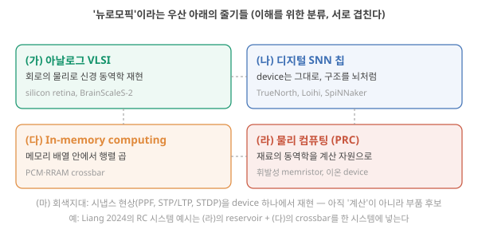
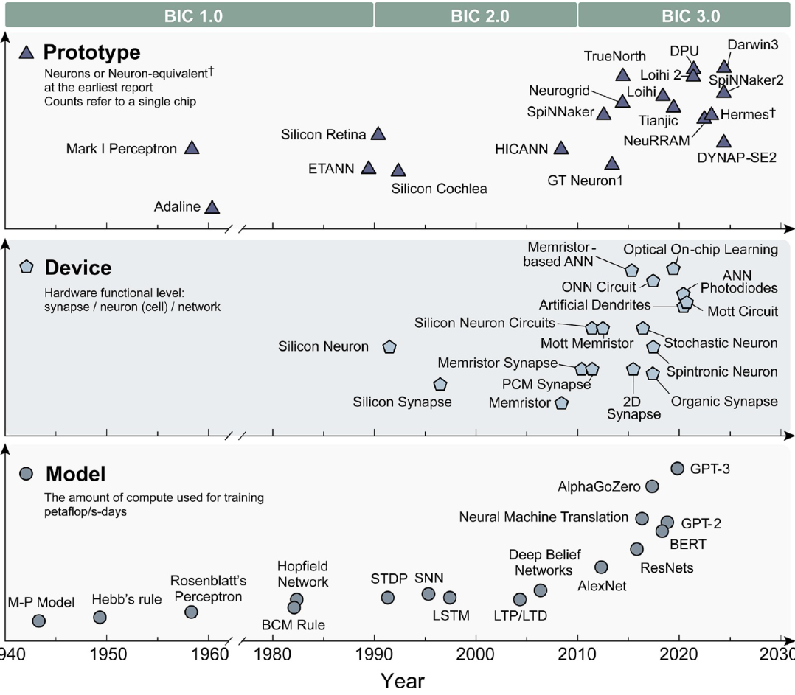
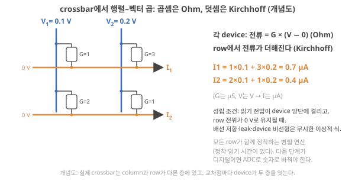
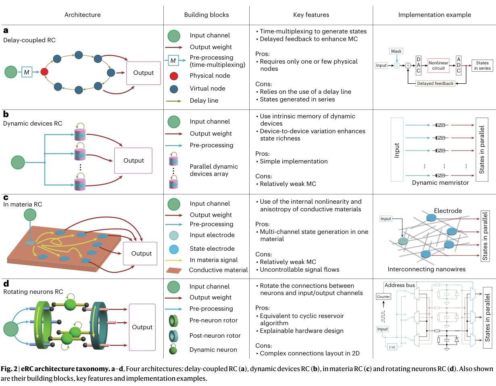
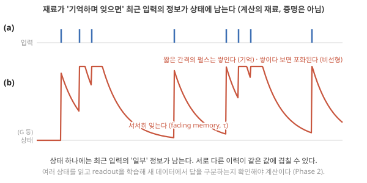
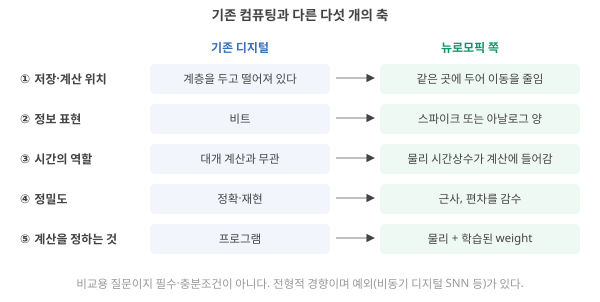
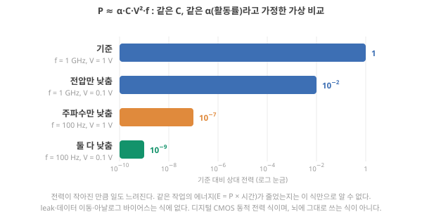
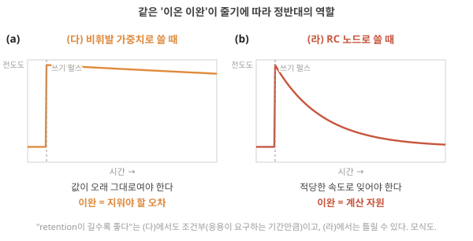
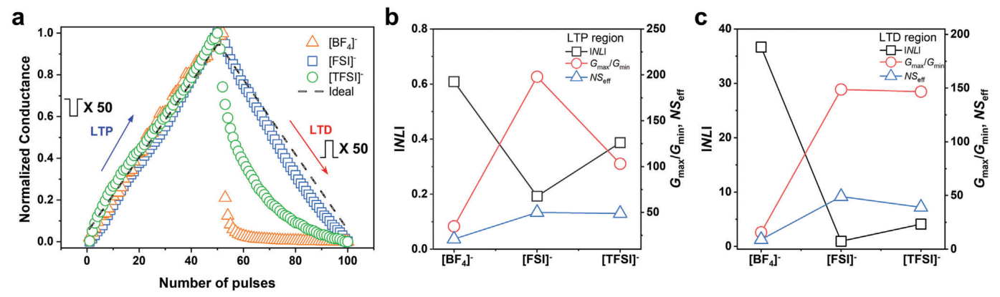

D1. 뉴로모픽 컴퓨팅이란 정확히 무엇이고 기존 컴퓨팅과 무엇이 다른가?
Phase 1 · 왜 뉴로모픽 컴퓨팅인가 · 10월 23일 (금)
답에 들어가야 할 것 — 정의, '뉴로모픽'이라는 이름 아래의 서로 다른 줄기(아날로그 VLSI, 디지털 SNN 칩, in-memory computing, 소재 기반 물리 컴퓨팅)와 각각이 푸는 문제, 내가 어느 줄기에 있는지
기본 경로: ① 사전 테스트(권장) → ② 학습자료(구간마다 잠깐 점검까지) → ③ 백지 회상 → ④ 가르치듯 내 답. ⓪·⑤와 접힌 '심화'·'추가 연습'은 선택입니다. 한 번에 끝낼 필요 없이 구간 단위로 나눠 읽어도 되고, 다시 열면 '지난번 읽던 곳' 링크가 뜹니다.
① 사전 테스트와 먼저 만들어 보기
아직 배우지 않은 내용을 먼저 풀어 봅니다. 많이 틀리는 것이 정상이고, 그게 목적입니다. 먼저 답해 본 문제는 읽을 때 눈에 들어오고 더 오래 남습니다. 문제마다 정답만 보이고, 이유는 학습자료와 ⑤ 다시 풀기에서 봅니다. 다 풀면 학습자료가 열립니다. 건너뛰려면 학습자료 위의 '그냥 읽기'를 누르세요(권장 단계일 뿐 필수는 아닙니다).
② 학습자료
오늘의 질문은 크지만, 네 개의 작은 질문으로 나누면 하나씩 답할 수 있습니다. 자료도 이 순서로 갑니다. 앞 절을 이해해야 뒤 절이 읽히니 순서대로 읽으세요. 컴퓨터나 반도체를 배운 적이 없어도 읽을 수 있게, 필요한 기초는 그때그때 본문 안에 "기초 계단"으로 두었습니다. 아는 내용이면 건너뛰어도 됩니다.
- 보통 컴퓨터는 어떻게 계산하나? (뉴로모픽이 무엇과 다른지 말하려면 먼저 '무엇'을 알아야 합니다)
- '뉴로모픽'이라는 말은 어디서 왔고 원래 무슨 뜻이었나?
- 지금 그 이름 아래에는 어떤 줄기들이 있고, 각각 무슨 문제를 풀려고 하나?
- 그래서 기존 컴퓨팅과 정확히 무엇이 다르고, 내 연구는 어디쯤에 있나?
0. 먼저, 보통 컴퓨터는 어떻게 계산하나
이 구간을 읽고 나면 "보통 컴퓨터는 값을 전압의 높낮이(0과 1)로 적고, 저장하는 부품과 계산하는 부품이 떨어져 있으며, 대개 박자(클록)에 맞춰 움직인다"는 세 문장을 자기 말로 설명할 수 있고, 클록이 물리적으로 어떤 신호이며 박자를 두 배로 빠르게 하면 계산의 결과와 끝나는 시각이 각각 어떻게 되는지(그리고 너무 빠르면 왜 안 되는지) 시간선으로 설명할 수 있다.
뉴로모픽 컴퓨팅은 "보통 컴퓨터와 다르게 계산한다"는 주장입니다. 그러니 보통 컴퓨터가 어떻게 계산하는지를 먼저 세 가지만 잡아 두면 뒤가 쉬워집니다. 그 세 가지를 말하려면 먼저 "계산한다"와 "저장한다"가 기계 안에서 무슨 뜻인지부터 정해야 합니다.
'저장한다'와 '계산한다'
손 계산기에 3 + 5를 넣는 장면을 떠올려 보세요. 기계는 두 가지 일을 합니다. 첫째, 내가 누른 3과 5를 어딘가에 들고 있어야 합니다. 이것이 저장입니다. 둘째, 들고 있는 두 숫자로 새 숫자 8을 만들어야 합니다. 이것이 계산입니다. 컴퓨터가 하는 일은 결국 이 둘뿐이고, 아무리 복잡한 프로그램도 "들고 있기"와 "새 값 만들기"를 아주 많이 반복한 것입니다. 사람과 다른 점은, 숫자를 종이나 머리가 아니라 전압으로 들고 있고, 새 값을 만드는 일을 손이 아니라 전기 스위치 회로가 한다는 것입니다. 그 스위치가 무엇인지는 1절에서 자세히 봅니다. 여기서는 "숫자가 전압으로 적혀 있다"는 말부터 풉니다.
비트: 전압의 높낮이로 적은 0과 1 — 그리고 디지털 vs 아날로그
컴퓨터 안의 전선 하나를 보면 전압이 높거나(요즘 칩에서는 약 1 V 안팎) 낮거나(0 V 근처) 둘 중 하나입니다. 이 두 상태에 1과 0이라는 이름을 붙인 것이 비트(bit)입니다. 전선 하나는 0 아니면 1, 두 가지밖에 못 적으니 전선을 여러 개 묶어 큰 숫자를 적습니다. 예를 들어 전선 4개가 낮음·높음·낮음·높음(0101)이면, 자리마다 8·4·2·1을 곱해 더해 0 + 4 + 0 + 1 = 5라는 숫자가 됩니다. 전선이 32개면 약 43억 가지를 구별할 수 있고, 3.7 같은 소수도 약속된 방식으로 32개의 비트에 적습니다. 글자, 색, 소리도 전부 이렇게 비트 묶음으로 적힙니다. 오늘 자주 나올 신경망(인공 신경망, 뇌의 신경세포 연결을 본떠 "입력 숫자에 어떤 숫자를 곱해 더하기"를 아주 많이 반복하는 계산식)도 마찬가지입니다. 그 안에서 곱해지는 숫자들을 가중치라 하는데, 가중치 역시 비트 묶음으로 메모리에 적혀 있고, 수가 수백만 개에서 수십억 개라서 뒤에 "가중치를 가져오는 일"이 문제가 됩니다.
이렇게 값이 띄엄띄엄(0 아니면 1, 중간 없음)인 방식을 디지털(digital)이라고 합니다. 반대로 전압 0.37 V와 0.38 V처럼 연속적인 값 자체를 정보로 쓰는 방식이 아날로그(analog)입니다. 수은 온도계의 눈금 사이 어디든 멈출 수 있는 것이 아날로그이고, 체온계가 36.5라는 숫자만 보여 주는 것이 디지털입니다. 디지털의 장점은 잡음에 강하다는 것입니다. 1 V가 흔들려 0.9 V가 되어도 여전히 "높음 = 1"로 읽히니까요. 아날로그에서는 그 0.1 V 차이가 곧 정보의 오차입니다. 이 차이는 오늘 3절의 '정밀도' 축에서 다시 나옵니다.
이제 보통 컴퓨터의 세 가지 특징을 말할 수 있습니다.
(1) 모든 것이 0과 1이다. 숫자도, 글자도, 신경망의 가중치도 비트의 묶음으로 저장됩니다. 전압이 높으면 1, 낮으면 0이고 중간값은 쓰지 않습니다. 그래서 잡음이 조금 섞여도 값이 변하지 않고, 같은 계산을 백 번 해도 같은 답이 나옵니다. 즉 보통 컴퓨터는 디지털 기계입니다.
둘째 특징을 말하려면 "계산하는 부품"과 "저장하는 부품"의 이름이 필요합니다. 컴퓨터 안을 열어 보면 아래 셋이 보입니다.
CPU, 메모리, GPU — 컴퓨터 안의 세 부품
CPU(central processing unit, 중앙처리장치)는 손톱만 한 칩으로, 덧셈·곱셈을 하는 연산기와 "다음에 무슨 계산을 할지" 정하는 제어 회로, 그리고 계산 직전의 숫자 몇 개를 잠깐 들고 있는 아주 작은 저장소 레지스터(register)가 함께 들어 있습니다. 연산기는 레지스터에 있는 값만 계산할 수 있습니다. 이 묶음 하나를 코어(core)라 하고, 요즘 CPU는 코어를 4–16개쯤 넣습니다.
메모리(memory, 기억장치)는 CPU 밖에 따로 꽂혀 있는 부품으로, 지금 쓰는 프로그램과 데이터 전체를 들고 있습니다(수 GB, 즉 수십억 바이트). 흔히 RAM이라 부르고, 그것을 만드는 방식의 이름이 DRAM입니다. 이 자료에서 "DRAM"은 "CPU에서 가장 먼 큰 메모리"라는 뜻으로 읽으면 됩니다. CPU 칩 안에는 레지스터와 DRAM 사이에 캐시(cache)라는 중간 크기 저장소가 여러 층 있어서, 최근에 쓴 값의 복사본을 가까이 둡니다. 그러니 저장소는 가까운 순서로 레지스터 → 캐시 → DRAM이고, 가까울수록 작고 빠르며 멀수록 크고 느립니다.
GPU(graphics processing unit)는 원래 화면의 점 수백만 개의 색을 한꺼번에 계산하려고 만든 칩입니다. CPU처럼 강한 연산기 몇 개 대신 단순한 연산기를 수천 개 넣고 같은 계산을 동시에 시킵니다. 여러 연산기가 동시에 일하는 것을 병렬(parallel) 처리라고 합니다. 신경망 계산도 "같은 계산을 숫자만 바꿔 수백만 번"이라서 GPU가 딥러닝(여러 층을 겹친 큰 신경망의 가중치를 데이터에 맞게 고쳐 가는 방법. 이 '고쳐 가기'가 학습입니다)의 주력이 되었습니다. CPU와 GPU는 연산기의 수만이 아니라 지휘 방식과 메모리 구성도 다르지만, GPU도 값을 연산기에서 떨어진 메모리에 두고 가져와 계산한다는 점은 CPU와 같습니다. 세 부품의 위치·구조 그림과 더 자세한 설명은 D2 1-2구간에 있습니다.
(2) 저장하는 곳과 계산하는 곳이 떨어져 있다. 계산은 CPU(또는 GPU) 안의 연산기가 하고, 데이터 전체는 칩 밖의 메모리(DRAM)에 있습니다. 연산기는 자기 바로 옆의 작은 저장소(레지스터)에 있는 값만 계산할 수 있으므로, 값은 먼저 메모리에서 레지스터로 올라와야 하고 결과는 다시 내려가야 합니다. 그 사이에는 캐시라는 중간 저장소가 여러 층 있어서, 방금 쓴 값은 멀리(DRAM)까지 가지 않고 가까운 층에서 다시 씁니다. 그래서 "더하기 한 번마다 DRAM을 왕복한다"는 말은 틀립니다. 문제는 신경망처럼 가중치가 캐시에 다 들어가지 않을 만큼 클 때 생깁니다. 그때는 값이 계속 먼 메모리에서 올라와야 하고, 이 왕복이 시간과 에너지를 먹습니다. 프로그램과 데이터를 같은 메모리에 두고, 그 메모리와 떨어진 연산기가 가져와 처리하는 이 구조를 von Neumann 구조라고 부릅니다(이름의 유래와 '프로그램 내장' 방식은 D2 2구간에서). 폴더의 Liang 리뷰는 이 구조의 한계를 "메모리와 연산 장치가 물리적으로 분리되어 있다"는 한 문장으로 정의합니다. Liang 2024, p.193
위 문단을 읽고 먼저 답해 보세요. "숫자 두 개를 더할 때마다 값이 DRAM까지 다녀온다"는 말은 맞을까요, 틀릴까요? 틀리다면 어떤 경우에 먼 메모리 왕복이 문제가 될까요? 아래 점검으로 확인합니다.

셋째 특징에는 '클록'이라는 말이 필요합니다. "박자에 맞춰 한 걸음씩"이라는 비유만으로는 칩 안에서 실제로 무엇이 일어나는지 보이지 않으니, 클록이 물리적으로 무엇인지부터 차례로 봅니다.
클록: 회로 전체가 맞추는 박자
무엇을 하려고 필요한가. 칩 안에서는 수많은 스위치 회로가 동시에 값을 바꿉니다. 회로마다 새 값을 만드는 데 걸리는 시간이 조금씩 다르므로, 아무 때나 값을 읽으면 어떤 값은 이미 새 값이고 어떤 값은 아직 바뀌는 중일 수 있습니다. 그래서 "모두 이 순간에만 값을 넘긴다"는 공통 신호를 둡니다. 그것이 클록(clock)입니다.
물리적으로는 어떤 신호인가. 클록은 칩 안을 지나는 전선의 전압입니다. 이 전압이 높은 상태(예: 0.8 V)와 낮은 상태(0 V)를 일정한 간격으로 번갈아 반복합니다. 그래프로 그리면 네모난 물결 모양이라 사각파라고 부릅니다(그림 0-1 위). 높은 상태 한 번과 낮은 상태 한 번을 합친 시간이 한 주기(period) \(T\) [s]이고, 1초에 주기가 몇 번 들어가는지가 클록 주파수 \(f\) [Hz, 헤르츠 = 1/s]입니다. 둘은 \(f = 1/T\)로 이어집니다. 요즘 CPU는 수 GHz(1 GHz = 10⁹ Hz)이고, 1 GHz면 한 주기 \(T\) = 1 ns(10억분의 1초)입니다. 주파수를 두 배(2 GHz)로 올리면 한 주기는 절반(0.5 ns)이 됩니다.
계산 중간의 값은 어디에 있나. 0절에서 본 레지스터가 그 자리입니다. 레지스터의 비트 하나하나는 "박자에 맞춰 값을 붙잡는" 작은 저장 회로(플립플롭, flip-flop)로 되어 있습니다. 이 회로는 클록 전압이 낮음에서 높음으로 바뀌는 순간, 즉 올라가는 가장자리(rising edge)에만 입력을 받아들이고, 다음 가장자리까지는 입력이 어떻게 바뀌든 붙잡은 값을 그대로 내보냅니다. (내려가는 가장자리를 쓰거나 둘 다 쓰는 설계도 있습니다. 이 자료의 예는 올라가는 가장자리로 정합니다.)
박자 사이에는 무엇이 일어나나. 레지스터가 내보내는 값은 덧셈기 같은 논리 회로(트랜지스터 스위치로 만든 계산 회로. 어떻게 생겼는지는 1-4~1-6에서 직접 봅니다)로 들어갑니다. 논리 회로 안의 스위치들이 차례로 켜지고 꺼지면서 출력이 새 값으로 바뀌는데, 여기에는 시간이 걸립니다. 이 시간을 지연(delay)이라 하고, 그동안 출력은 옛 값과 새 값 사이를 오가며 흔들립니다. 지연이 지나면 출력이 새 값에서 멈춰 안정됩니다. 다음 가장자리가 오면 레지스터가 그 새 값을 붙잡고, 같은 일이 되풀이됩니다(그림 0-1 아래).
이렇게 공통 박자에 맞춰 움직이는 회로를 동기(synchronous) 회로라고 합니다. 박자 없이 "앞 단계가 끝났다는 신호가 도착하면 그때 움직이는" 회로도 있는데, 그것은 비동기(asynchronous) 회로입니다.

같은 계산을 느린 박자와 빠른 박자로
예제를 하나 정합니다. 레지스터 R이 0에서 시작해 1, 2, 3을 차례로 더해 6을 만드는 계산입니다. 이 예제에서는 "박자 한 번에 덧셈 한 단계"로 정합니다. 실제 CPU에서 한 박자에 하는 일의 양은 설계마다 다르고, 덧셈 하나에 여러 박자를 쓰거나 한 박자에 여러 일을 겹쳐 하기도 합니다. 덧셈기(논리 회로)의 지연은 0.4 ns라고 둡니다(예시 값).
1 GHz 클록에서 이 계산은 몇 ns에 끝날까요? 클록을 2 GHz로 올리면 결과(6)와 끝나는 시각은 각각 어떻게 될까요? 먼저 적어 두고 아래 단계를 따라가세요.
단계 0 — 시작(0 ns). R = 0. 덧셈기는 R의 값 0과 첫 입력 1을 받아 계산을 시작합니다. 0.4 ns 동안 출력이 흔들리다가 1에서 안정됩니다.
단계 1 — 첫 가장자리. 1 GHz에서는 1 ns에 옵니다. 출력은 이미 0.4 ns에 안정됐으니 R은 1을 정확히 붙잡습니다. 남은 0.6 ns는 그냥 기다린 시간입니다. 2 GHz에서는 0.5 ns에 오는데, 출력이 0.4 ns에 이미 안정됐으므로 역시 1을 붙잡습니다(기다림 0.1 ns).
단계 2·3 — 같은 일의 반복. R = 1이 덧셈기로 가서 1 + 2 = 3이 되고, 다음 가장자리에 R = 3. 다시 3 + 3 = 6이 되고, 다음 가장자리에 R = 6. 가장자리 세 번이면 끝납니다.
정리. 1 GHz: 가장자리 세 번 × 1 ns = 3 ns에 R = 6. 2 GHz: 세 번 × 0.5 ns = 1.5 ns에 R = 6. 결과는 같고, 끝나는 시각만 절반이 됐습니다. 걸음 수(가장자리 세 번)는 계산이 정하고, 걸음 하나의 길이(주기)는 클록이 정하기 때문입니다. 그림 0-2가 두 시간선을 나란히 그린 것입니다.

너무 빠르면 왜 안 되나. 그렇다면 3 GHz, 10 GHz로 계속 올리면 될까요? 주기 \(T\)가 덧셈기의 지연(0.4 ns)보다 짧아지면, 가장자리가 왔을 때 덧셈기 출력은 아직 흔들리는 중입니다. 그 순간 R이 무엇을 붙잡을지는 보장할 수 없습니다. 옛 값일 수도, 새 값일 수도, 비트마다 섞인 엉뚱한 값일 수도 있습니다(그림 0-3). 그래서 칩 설계자는 칩 안에서 가장 느린 경로의 지연에 여유를 더한 것보다 주기를 길게 잡고, 그 범위 안에서만 결과를 보장합니다. "클록을 두 배로 해도 결과는 같다"는 말은 이 범위 안에서만 참입니다.

클록 두 배 = 프로그램 두 배 빠름? 꼭 그렇지는 않습니다. 위 예제는 계산이 레지스터와 덧셈기 사이에서만 돌았지만, 실제 프로그램은 값을 먼 메모리(DRAM)에서 가져오기를 기다리는 시간이 길고, 그 기다림은 CPU 클록을 올려도 줄지 않습니다. 또 클록을 올리면 전력과 열이 늘어 칩이 스스로 속도를 낮추기도 합니다. 전력 이야기는 1-7, 메모리를 기다리는 시간은 D2에서 숫자로 봅니다. 해석

(3) 대부분은 시계(클록)에 맞춰 한 걸음씩 간다. 보통의 CPU·GPU는 동기 회로라서, 클록의 가장자리마다 레지스터가 새 값을 붙잡으며 한 걸음씩 나아갑니다. 위 예제처럼 계산에 시간이 걸리는 건 걸음 수가 많아서이지, 물리적 시간 자체가 계산에 들어가는 건 아닙니다. 그래서 주기가 가장 느린 경로의 지연보다 넉넉히 긴 범위 안에서, 같은 입력과 프로그램이라면 클록을 두 배 빠르게 돌려도 답은 같습니다. 단, '디지털'과 '동기'는 다른 말입니다. 디지털은 값을 띄엄띄엄(0·1) 적는다는 뜻이고, 동기는 박자에 맞춰 움직인다는 뜻입니다. 클록 없이 사건이 올 때만 움직이는 비동기 디지털 회로도 있습니다(2절 (나)의 Loihi 2가 그렇습니다). 오늘 기억할 점은 "보통의 디지털 계산에서는 물리적 시간(박자의 빠르기)이 결과를 바꾸지 않는다"입니다. 단, 회로가 박자를 따라오고(주기 > 가장 느린 경로의 지연 + 여유), 입력과 프로그램이 같고, 바깥 시각을 읽지 않는 계산일 때의 이야기입니다.
아래 원문 그림은 이 (2)를 실제 논문이 어떻게 그리는지 보여 줍니다. 원문 그림 읽는 법: 왼쪽 패널 a에서 'Memory'라고 적힌 상자와 'Processing'(연산) 상자가 떨어져 있고, 그 사이 화살표에 가중치 w가 오가는 것을 찾으세요. 그 화살표 위의 'von Neumann bottleneck'이 지금 읽은 (2)입니다. 오른쪽 b는 2절 (다)에서 다시 보니 지금은 "메모리 상자 안에서 계산이 끝난다"는 점만 보면 됩니다.

- von Neumann 구조
- 프로그램과 데이터를 같은 메모리에 두고(프로그램 내장 방식), 메모리와 떨어진 연산 장치가 그것을 꺼내 처리하는 컴퓨터 구조. 이름은 1945년 이 설계를 보고서(EDVAC 초안)로 정리한 von Neumann에서 왔지만, 아이디어는 ENIAC 팀과 Turing의 작업과도 겹쳐 한 사람의 발명으로 보기는 어렵다. Copeland 2006, §ENIAC and EDVAC 오늘날 거의 모든 컴퓨터가 이 구조다.
- 비트 / 디지털 / 아날로그
- 전선 하나의 높음·낮음이 비트(1·0). 값이 띄엄띄엄이면 디지털, 연속 값 자체가 정보이면 아날로그. 기초 계단
- CPU / 메모리(DRAM) / 캐시 / GPU
- 계산하는 칩 / 데이터 전체를 들고 있는 먼 저장소 / 그 사이의 가까운 복사본 저장소 / 단순 연산기 수천 개를 병렬로 돌리는 칩. 기초 계단
- 클록 / 동기 / 비동기
- 회로가 맞추는 박자 / 박자에 맞춰 움직임 / 신호가 올 때 움직임. 디지털과는 다른 축. 기초 계단
- 행렬–벡터 곱 (MVM)
- 신경망 계산의 뼈대인 "곱해서 더하기". 입력 숫자 여러 개에 각각 '가중치'라는 숫자를 곱해 더하면 출력 하나가 나오고, 그것을 출력 수만큼 반복한다. 곱셈과 덧셈만 있지만 수가 엄청나게 많다. 2절 (다)에서 2×2 숫자 예로 직접 계산한다.
신경망의 가중치가 캐시에 들어가지 않을 만큼 크다면, 곱셈과 덧셈을 수백만 번 하는 계산에서 시간과 에너지는 주로 어디에 쓰일까요? 계산 자체일까요, 값을 먼 메모리에서 가져오는 일일까요? (답은 D2에서 숫자로 확인합니다. 오늘은 감만 잡으세요.)
여기서 한 번 쉬어도 좋습니다. 다음 구간은 "뉴로모픽"이라는 이름이 처음 생긴 자리로 가는데, 거기서 트랜지스터라는 부품을 처음부터 설명합니다.
왜 클록은 수 GHz에서 더 안 빨라졌나? 답에는 트랜지스터, 문턱 아래 전류, CMOS가 모두 필요해서 1구간 1-7(Dennard scaling)에서 봅니다.
- 저장 = 값을 들고 있기, 계산 = 들고 있는 값으로 새 값 만들기. 보통 컴퓨터는 값을 전압의 높낮이(비트, 디지털)로 적는다.
- 계산은 CPU·GPU 안의 연산기가, 데이터 전체는 칩 밖 메모리(DRAM)가 든다. 값은 레지스터·캐시·DRAM의 계단을 오르내린다. 가중치가 캐시보다 크면 먼 메모리 왕복이 시간과 에너지를 먹는다. 이것이 von Neumann 병목이다 Liang 2024, p.193.
- 클록 = 높음·낮음이 번갈아 오는 사각파 전압(주기 \(T\), 주파수 \(f = 1/T\)). 레지스터가 가장자리에서 값을 붙잡고, 사이 시간에 논리 회로가 새 값을 만들어 안정된다. 1 GHz → 2 GHz면 주기가 절반이라 같은 계산(가장자리 세 번)이 3 ns → 1.5 ns에 끝나고 결과는 같다. 주기가 가장 느린 경로의 지연보다 짧으면 결과를 보장할 수 없다. 보통의 디지털 계산에서 시간은 걸음을 담는 그릇일 뿐이고, 이 점을 3절에서 뒤집는다. (디지털 ≠ 동기: 비동기 디지털 칩도 있다.)
1. 이름의 기원: 소자의 물리로 계산하자
이 구간을 읽고 나면 n채널 MOSFET의 다섯 부분과 두 전압(\(V_{GS}\), \(V_{DS}\))의 역할을 그림으로 설명하고, "문턱 아래에는 채널이 없는데 왜 전류가 0이 아닌가, 전자는 어디를 넘어가나"에 에너지 장벽과 열에너지로 답할 수 있다. 또 트랜지스터 스위치로 비트를 저장하고(DRAM), 논리를 만들고(CMOS 인버터·NAND), 더하는(반가산기) 과정을 따라가고, Dennard scaling이 왜 멈췄는지와 Mead가 같은 트랜지스터를 왜 아날로그로 썼는지 말할 수 있다. 길어서 1-1~1-2 / 1-3~1-6 / 1-7~1-8로 나눠 읽어도 됩니다.
'neuromorphic'이라는 말은 1980년대 말 Caltech의 Carver Mead가 쓰기 시작했습니다(처음 쓴 정확한 시점은 미확인). 대표 문헌은 1990년 Proc. IEEE의 "Neuromorphic electronic systems"이고, Mead는 이 논문에서 소자의 물리가 기본 연산을 정하게 하는 시스템을 통틀어 '뉴로모픽 시스템'이라 부르겠다고 씁니다. Mead 1990, p.1631 (폴더 밖 문헌. 2026-10-24에 웹의 원문 PDF로 본문을 대조했습니다.) 폴더의 Roadmap 리뷰는 이 시기를 '뉴로모픽 공학기(약 1990–2010)'로 묶고, Mead의 방법을 문턱전압 아래(subthreshold)에서 동작하는 아날로그 VLSI 회로로 신경 정보처리를 흉내 낸 것으로 정리합니다. Roadmap 2026, Fig. 2, p.8104–8106
이 한 문장에 처음 보는 말이 셋 있습니다. '문턱전압', '아날로그 VLSI'(VLSI는 very large scale integration, 트랜지스터를 수만 개 이상 한 칩에 모아 만든 회로라는 뜻이고, '아날로그'는 0절에서 본 연속 값을 쓴다는 뜻입니다), 그리고 그 둘의 바탕인 '트랜지스터'입니다. 트랜지스터부터 풀겠습니다. 이 구간의 순서는 이렇습니다. 1-1 트랜지스터의 생김새와 두 전압 → 1-2 문턱 아래에서도 전류가 흐르는 이유 → 1-3~1-6 디지털이 트랜지스터를 스위치로 쓰는 법(저장, CMOS, 논리, 덧셈) → 1-7 작게 만들기의 역사와 한계(Dennard scaling) → 1-8 Mead가 같은 트랜지스터를 아날로그로 쓴 이유.
1-1. 트랜지스터: 생김새와 두 개의 전압
먼저, 전압과 전류의 역할 나누기
물이 흐르는 관을 떠올리세요. 물을 밀어 주는 수압이 있어야 물이 흐르고, 실제로 흐르는 물의 양은 수압과 관의 넓이로 정해집니다. 전기도 같습니다. 전하를 밀어 주는 쪽이 전압(단위 V, 볼트)이고, 실제로 흐르는 전하의 양이 전류(단위 A, 암페어)입니다. 전압은 "두 점 사이의 차이"로만 뜻이 있어서, 어느 한쪽을 0 V라고 정하고(기준, 보통 '접지') 다른 쪽이 그보다 얼마나 높은지를 말합니다. 이 자료에서 "게이트에 1 V를 건다"는 말은 "게이트를 기준보다 1 V 높게 만든다"는 뜻입니다. 전압은 걸어 두는 것이고 전류는 그 결과로 흐르는 것, 이 역할 구분을 들고 트랜지스터로 갑니다.
방향 약속 하나. 전류의 방향은 역사적으로 '양(+)전하가 움직이는 방향'으로 정해져 있습니다. 이것을 관습적 전류 방향이라 합니다. 그런데 금속이나 n형 반도체(바로 아래)에서 실제로 움직이는 것은 음(−)전하인 전자라서, 전자는 전류 화살표와 반대 방향으로 움직입니다. 이 자료의 그림은 관습적 전류를 빨간 화살표(I), 전자의 움직임을 파란 화살표(e⁻)로 구분합니다. 전해질에서 양이온과 음이온이 서로 반대로 움직여도 둘 다 같은 방향의 전류에 보태지는 것과 같은 약속입니다.
반도체, 도핑, 그리고 정공
트랜지스터는 반도체(semiconductor)인 실리콘으로 만듭니다. 순수한 실리콘 결정에서는 전자 대부분이 원자 사이의 결합에 묶여 있어서, 실온에서 움직일 수 있는 전하가 아주 적습니다(금속과 절연체의 중간이라 '반'도체). 여기에 다른 원자를 아주 조금 섞는 것을 도핑(doping)이라고 합니다.
- 인(P)처럼 바깥 전자가 실리콘보다 하나 많은 원자를 섞으면, 결합에 쓰이고 남은 전자가 자유롭게 움직입니다. 움직이는 전하가 주로 전자(negative)인 실리콘을 n형이라 하고, 아주 진하게 도핑하면 n⁺라고 씁니다.
- 붕소(B)처럼 바깥 전자가 하나 모자란 원자를 섞으면, 결합 자리에 전자가 하나 빈 곳이 생깁니다. 이웃 결합의 전자가 그 빈자리로 옮겨 가면 빈자리는 반대 방향으로 옮겨 간 것처럼 보이고, 결과적으로 양(+)전하 하나가 움직이는 것처럼 행동합니다. 이 빈자리를 정공(hole)이라 하고, 움직이는 전하가 주로 정공(positive)인 실리콘을 p형이라 합니다. 전자를 하나 받아들인 붕소 원자는 결정 속에 고정된 음이온(−)이 됩니다.
- 비유의 한계: 극장에서 사람들이 한 칸씩 옮겨 앉으면 빈 좌석이 반대로 이동하는 것과 비슷하지만, 정공은 실제 입자가 아니라 많은 전자의 집단적 움직임을 입자 하나처럼 다루는 방법입니다.
중요한 점 하나. p형 실리콘에도 움직이는 전자가 아주 적게나마 늘 있습니다(열에너지가 일부 결합을 끊어 만듭니다). '아주 적다'와 '없다'는 다릅니다. 이것이 1-2의 답의 실마리입니다. 이온트로닉스와 비교하면, 고분자 전해질에서 양이온과 음이온이 따로 움직이듯 반도체에서는 전자와 정공이 따로 움직입니다. 다만 반도체의 운반자는 결정 안의 전자 상태이고, 이온처럼 물질(원자) 자체가 이동하는 것이 아닙니다.
트랜지스터: 전압으로 여닫는 전류의 수도꼭지 (n채널 MOSFET)
어디에 있나. 트랜지스터(transistor)는 CPU·메모리·GPU 칩 안에 수십억 개씩 들어 있는 가장 작은 부품입니다. 하나의 크기가 수십 nm로, 눈에 보이지 않습니다.
무엇을 하려고 필요한가. 전압 하나로 다른 곳의 전류를 켜고 끄거나 조절하려고 씁니다. 그래야 한 회로의 출력 전압이 다음 회로를 조절할 수 있고, 이것을 이어 붙여 저장·계산 회로를 만들 수 있습니다.
어떻게 생겼나(그림 1a). 이 자료가 기준으로 삼는 것은 가장 흔한 n채널 MOSFET(metal–oxide–semiconductor field-effect transistor, 금속–산화막–반도체 전계효과 트랜지스터)입니다. 이름이 곧 구조여서, 위에서부터 금속(게이트 전극) – 산화막(절연층) – 반도체(실리콘)가 겹쳐 있습니다. 다섯 부분으로 나눠 봅니다.
- p형 기판(몸체, body): 바탕이 되는 p형 실리콘. 정공이 많고 움직이는 전자는 아주 적습니다.
- 소스(source): 기판 표면 한쪽을 n⁺로 진하게 도핑한 영역. 움직이는 전자가 아주 많아서 전자의 출발점이 됩니다(그래서 '근원').
- 드레인(drain): 반대편의 또 다른 n⁺ 영역. 전자가 빠져나가는 곳('배수구').
- 게이트 산화막(절연층): 소스와 드레인 사이의 표면을 덮는 두께 수 nm의 절연막(이산화규소 등). 전류가 거의 지나가지 못합니다.
- 게이트 전극: 산화막 위의 전극(금속 또는 진하게 도핑한 다결정 실리콘).
소스와 드레인 사이, 산화막 바로 아래의 실리콘 표면이 채널(channel)이 생기는 자리입니다.
두 전압은 하는 일이 다르다. 전압은 소스를 기준(0 V)으로 잽니다. 몸체도 보통 소스와 같은 0 V에 잇습니다.
- \(V_{GS}\)(게이트–소스 전압)는 표면에 전자가 얼마나 모이는가를 정합니다. 게이트는 산화막으로 막혀 있어 전류를 넣지 않고, 전기장으로 아래 표면의 전하를 바꿉니다(그래서 '전계효과'). 수도꼭지의 손잡이입니다.
- \(V_{DS}\)(드레인–소스 전압)는 표면으로 들어온 전자를 드레인 쪽으로 끌어당깁니다. 수압에 해당합니다. \(V_{DS} = 0\)이면 표면에 전자가 아무리 많아도 양쪽 조건이 같아 알짜 전류가 없습니다.
전자와 전류의 방향. n채널에서는 전자가 소스 → 드레인으로 움직이므로, 관습적 전류 \(I_D\)(드레인 전류)는 드레인 → 소스로 흐릅니다(그림 1a의 파란·빨간 화살표).
서로 다른 두 '새는 전류'. 산화막이 수 nm 이하로 아주 얇으면, 전자가 양자 터널링으로 산화막을 직접 뚫고 지나가는 아주 작은 게이트 누설이 생깁니다. 이것은 게이트 ↔︎ 실리콘 사이의 세로 경로입니다. 아래 1-2에서 다룰 문턱 아래 전류는 소스 → 드레인의 가로 경로이고 산화막을 지나지 않습니다. 둘 다 '꺼져 있어도 새는 전류'라서 함께 '누설'이라 부르기도 하지만, 길도 원인도 다릅니다.
한 트랜지스터의 출력(드레인 쪽 전압)을 다음 트랜지스터의 손잡이(게이트)에 이을 수 있다는 점이 핵심입니다. 그렇게 이어 붙인 수십억 개가 칩 하나입니다(1-3부터).

게이트 전압을 올리면 무엇이 변하나. 이제 \(V_{DS}\)를 작은 양의 값(예: 0.1 V 이상)으로 고정해 두고 \(V_{GS}\)를 0에서 천천히 올려 봅니다. 변하는 것은 게이트 아래 실리콘의 전하 분포입니다(그림 1b).
변수와 단위. 게이트에 건 전압 \(V_{GS}\) [V], 드레인으로 흐르는 전류 \(I_D\) [A], 그리고 문턱전압(threshold voltage) \(V_{th}\) [V]. \(V_{th}\)는 "표면의 전자 농도가 기판의 원래 정공 농도만큼 커지는 게이트 전압", 즉 전자의 층이 본격적으로 채널 역할을 하기 시작하는 점으로 정의하는 기준점입니다(측정에서는 정해 둔 전류 값에 닿는 전압 같은 다른 정의도 씁니다). 문턱(threshold)은 문지방이라는 뜻이지만, 아래에서 보듯 닫힌 문이 갑자기 열리는 경계가 아닙니다.

단계 1 — \(V_{GS} = 0\) V: 강한 장벽, 아주 작은 전류. 게이트 아래 표면에는 정공이 있고 움직이는 전자는 극히 적습니다(그림 1b ①). 소스에는 전자가 많지만, 소스와 채널 자리 사이에 높은 에너지 장벽(1-2에서 그림으로)이 있어 넘어가는 전자가 극히 적습니다. 전류는 아주 작습니다. 그래도 정확히 0은 아닙니다. 디지털 회로가 '꺼짐(0)'이라 부르는 상태입니다.
단계 2 — \(0 < V_{GS} < V_{th}\), 문턱 아래: 작지만 지수적으로 커지는 전류. 게이트의 + 전압이 표면의 정공을 밀어내 공핍층을 만들고, 표면에 전자가 조금 모이기 시작합니다(그림 1b ②). '강하게 전도하는 채널(반전층)'은 아직 없지만, 움직일 수 있는 전자는 표면에 조금 있고, 그 수가 \(V_{GS}\)에 지수적으로 늘어납니다. 이 전자들이 소스 쪽에서 드레인 쪽으로 흘러(주로 농도 차에 의한 확산) 작은 전류가 됩니다. 이 자료의 예시(300 K, 아래 1-2의 \(\kappa = 0.7\))에서는 85 mV 올릴 때마다 전류가 약 10배가 됩니다. 절대값은 작지만(nA 이하) 변화율은 매우 큽니다. 이 영역이 문턱 아래(subthreshold), 또는 약한 반전(weak inversion)입니다.
단계 3 — \(V_{GS} \approx V_{th}\): 기준점을 지난다. 표면 전자 농도가 기판의 원래 정공 농도와 비슷해지고, 반전층이 '강하게 전도하는 채널'로 자리 잡기 시작합니다. 그러나 전류 곡선은 이 점에서 꺾이지 않고 매끄럽게 이어집니다(그림 1의 로그 축). \(V_{th}\)는 "이쯤부터는 다른 식이 더 잘 맞는다"는 기준점이지, 닫힌 문이 열리는 순간이 아닙니다.
단계 4 — \(V_{GS} > V_{th}\), 문턱 위: 큰 전류. 반전층의 전자가 \(V_{GS}\)에 거의 비례해 늘어나(이제 지수가 아니라) 소스와 드레인을 잇고(그림 1b ③), 전류가 µA–mA 수준으로 커집니다. 전류는 대략 \((V_{GS} - V_{th})\)의 제곱 또는 비례로 늘어서, 같은 전압 변화에 대한 '배율' 변화는 문턱 아래보다 훨씬 작습니다. 디지털 회로가 '켜짐(1)'이라 부르는 상태입니다.
정리. 같은 소자에 세 얼굴이 있습니다. 꺼짐(아주 작지만 0이 아닌 전류) → 문턱 아래(작지만 지수적으로 변하는 전류) → 켜짐(큰 전류). 경계는 문이 아니라 연속적인 경사입니다. 디지털은 양 끝만 쓰고(1-3), Mead는 가운데를 썼습니다(1-8).
작은 예시. \(V_{th} = 0.4\) V인 트랜지스터에 1 V를 걸면 켜지고(단계 4), 0 V를 걸면 꺼집니다(단계 1). 0.2 V를 걸면 단계 2라서, 켜진 것도 꺼진 것도 아닌 작은 전류가 흐릅니다.
"문턱 아래에는 채널이 없으니 전류는 정확히 0이다" — 반만 맞습니다. 없는 것은 '강하게 전도하는 채널(반전층)'이고, 움직일 수 있는 전자 자체는 표면에 조금 있으며 그 수가 \(V_{GS}\)에 지수적으로 변합니다. 그래서 전류는 0이 아니라 '작고, 지수적'입니다. 그리고 문턱전압은 닫힌 문이 갑자기 열리는 절대 경계가 아니라, 곡선의 성격이 바뀌는 구간에 붙인 기준점입니다.
1-2. 문턱 아래에서도 전류가 흐르는 이유: 어디를, 어떻게 넘어가나
단계 2에서 "장벽을 넘는 전자가 조금 있다"고 했습니다. 여기서 흔히 두 질문이 생깁니다. (1) 채널이 없는데 전류가 왜 0이 아닌가? (2) '넘어간다'면 어디를 넘는가 — 혹시 전자가 열에너지로 절연막을 뚫고 가는가? 답을 그림 하나(그림 1c)로 봅니다. 에너지 그림이라 축부터 읽습니다.
에너지 그림 읽는 법. 가로축은 위치입니다. 소스에서 출발해 게이트 아래 실리콘 표면(채널 영역)을 따라 드레인까지 가는 길이고(그림 1c 오른쪽 위의 보라 선), 이 길은 산화막을 지나지 않습니다. 세로축은 그 위치에 있는 전자 하나의 에너지(정확히는 움직일 수 있는 전자가 가질 수 있는 가장 낮은 에너지)입니다. 위로 갈수록 높고, 공을 언덕 위에 올려놓을 때처럼 전자에게 '높은 곳'은 '올라가야 하는 곳'입니다. 주의할 점: 전자는 음전하라서 전압(전위)이 높은 곳일수록 전자의 에너지는 낮습니다. 게이트에 + 전압을 걸면 게이트 아래 표면의 전위가 올라가고, 그곳의 전자 에너지는 내려갑니다.
장벽은 어디 있나. 소스(n⁺)에서는 전자의 에너지가 낮고, 게이트 아래의 p형 표면에서는 높습니다. 그래서 소스와 채널 영역 사이에 언덕, 곧 에너지 장벽이 있습니다. 드레인은 \(V_{DS}\)만큼 전위가 높으므로 전자 에너지가 \(qV_{DS}\)만큼 낮습니다(\(q\)는 전자 하나의 전하 크기). 장벽은 실리콘 안, 소스와 채널 영역 사이에 있고, 산화막은 이 그림의 바깥(표면 위쪽)에 있습니다. 문턱 아래 전류는 산화막을 지나지 않습니다.
열에너지가 하는 일. 소스에는 전자가 아주 많고, 실온의 전자들은 열 때문에 에너지가 제각각입니다. 바닥보다 에너지가 \(E\)만큼 높은 전자의 수는 \(e^{-E/kT}\)에 비례해 줄어듭니다(볼츠만 분포, 그림 1c 왼쪽 막대). 여기서 \(k\)는 볼츠만 상수, \(T\)는 절대온도이고, \(kT\)는 '열에너지 한 몫'의 크기로 300 K에서 약 25.85 meV(밀리전자볼트; 1 eV는 전자 하나가 1 V를 지날 때 얻는 에너지)입니다. 장벽 꼭대기보다 높은 에너지를 가진 전자는 드물지만 0은 아니므로, 늘 일부가 장벽을 넘어 채널 영역으로 들어오고, 드레인 쪽 내리막으로 끌려가 전류가 됩니다. 화학반응에서 활성화 에너지보다 큰 에너지를 가진 분자만 반응해 속도가 \(e^{-E_a/RT}\)를 따르는 Arrhenius 식과 같은 꼴입니다(몰 단위면 \(RT\), 입자 하나면 \(kT\)).
게이트 전압을 올리면. \(V_{GS}\)를 올리면 채널 영역의 전자 에너지가 내려가 장벽이 낮아집니다. 장벽이 \(kT\)만큼 낮아질 때마다 넘을 수 있는 전자 수는 \(e \approx 2.7\)배가 됩니다. 그런데 게이트 전압이 전부 장벽을 낮추는 데 쓰이지는 않습니다. 게이트와 표면 사이의 산화막, 표면 아래의 공핍층이 전압을 나눠 가지기 때문에, 장벽은 \(V_{GS}\) 변화의 일부인 \(\kappa\)배만큼만 낮아집니다(\(\kappa < 1\), 산화막이 얇을수록 1에 가까움). 예시 \(\kappa = 0.7\)이면 \(V_{GS}\)를 85 mV 올릴 때 장벽이 약 59.5 meV 낮아지고, 넘는 전자 수는 \(e^{59.5/25.85} \approx 10\)배가 됩니다(그림 1c 오른쪽).
\(V_{DS}\)의 역할 다시. 넘어온 전자가 드레인으로 가는 것은 드레인 쪽 내리막과, 채널 영역 안에서 전자가 소스 쪽에 많고 드레인 쪽에 적은 농도 차(확산) 덕분입니다. \(V_{DS}\)가 열전압(아래)의 몇 배, 대략 0.1 V 이상이면 드레인에서 거꾸로 넘어오는 전자가 무시할 만해져, 문턱 아래 전류는 \(V_{DS}\)에 거의 무관하고 \(V_{GS}\)가 정합니다. \(V_{DS} = 0\)이면 양쪽에서 넘는 전자 수가 같아 알짜 전류는 0입니다. MIT 강의노트도 문턱 아래에서는 전자가 소스에서 드레인으로 확산으로 흐르고, \(V_{DS} = 0\)이면 전류가 0이며, \(V_{DS}\)가 \(kT/q\)보다 충분히 크면 \(V_{DS}\)에 무관해진다고 정리합니다. del Alamo 2007 (MIT OCW), 강의 29, 슬라이드 15–17

- "채널이 없으니 전류가 0 아닌가?" — 문턱 아래에서 없는 것은 '강하게 전도하는 채널'이지 움직이는 전자가 아닙니다. 소스에는 전자가 아주 많고, 그중 열에너지가 큰 일부가 늘 장벽을 넘습니다. 그래서 전류는 작지만 0이 아닙니다.
- "어디를 넘어가나?" — 실리콘 안, 소스와 채널 영역 사이의 에너지 장벽입니다. 절연막(산화막)을 뚫고 가는 것은 게이트 누설(양자 터널링, 세로 경로)이라는 다른 현상입니다.
- "어떻게 넘어가나?" — 열에너지 분포의 꼬리에 있는 전자가 장벽을 '타고 넘습니다'. 게이트 전압은 장벽 높이를 바꾸고, 넘는 전자 수는 장벽 높이에 지수적으로 달려 있습니다.
식으로 적기. 왜 지금 이 식이 필요한가: "지수적"이라는 말을 숫자로 확인하고, 1-7의 "왜 전압을 더 못 낮추나"와 1-8의 Mead의 '공짜 지수함수'가 얼마나 가파른지 보기 위해서입니다. \(V_{DS}\)가 열전압의 몇 배 이상으로 고정되어 있을 때,
\[ I_D \approx I_0 \, e^{\kappa V_{GS}/U_T} \]
- \(I_D\) [A]: 드레인 전류(결과)
- \(I_0\) [A]: 소자의 크기·도핑 등으로 정해지는 기준 전류
- \(V_{GS}\) [V]: 게이트–소스 전압(원인)
- \(U_T = kT/q\) [V]: 열전압(thermal voltage). 열에너지 한 몫 \(kT\)를 전자 하나의 전하 \(q\)로 나눠 전압 단위로 적은 것. 300 K에서 약 25.8 mV(더 정확히는 25.85 mV)
- \(\kappa\) (무차원, 1보다 작음): 게이트 전압 중 실제로 장벽을 낮추는 데 쓰이는 비율. 보통 0.6–0.9 [미확인: 아날로그 회로 교과서에 흔한 범위이나 원문 대조 안 함]
계산 순서: \(\kappa V_{GS}\)를 \(U_T\)로 나눈 값을 지수에 올리고 \(I_0\)를 곱합니다. 결과의 뜻: 지수 안의 값이 1 커질 때마다 전류가 \(e \approx 2.7\)배가 됩니다.
작은 예시. \(\kappa = 0.7\)이면 \(V_{GS}\)를 \(U_T/\kappa = 25.8/0.7 \approx 37\) mV 올릴 때마다 전류가 \(e\)배가 됩니다. 10배가 되려면 \(\ln 10 \approx 2.3\)배의 전압, 즉 약 85 mV입니다. 전압이 조금만 변해도 전류는 자릿수가 바뀝니다.
약 60 mV/decade라는 한계. 전류를 10배(1 decade) 늘리는 데 필요한 게이트 전압을 문턱 아래 기울기(subthreshold swing) \(S\)라 부르고 단위는 mV/decade입니다. 위 식에서 \(S = (kT/q)\ln 10/\kappa\)입니다. \(\kappa\)가 가장 클 때(이상적으로 1)가 가장 가파르므로, 300 K에서 \(S \ge 25.85 \times 2.303 \approx 59.5\) mV/decade, 흔히 "약 60 mV/decade"입니다. MIT 강의노트는 이 값(300 K, 이상적)과 함께 잘 만든 실제 소자가 300 K에서 70–90 mV/decade 정도라고 적습니다. del Alamo 2007 (MIT OCW), 강의 29, 슬라이드 13 이 한계는 장벽을 넘는 전자의 수가 볼츠만 분포를 따른다는 데서 오므로, 온도를 낮추지 않는 한 이 원리로 동작하는 트랜지스터는 실온에서 이보다 가파를 수 없습니다(터널링처럼 다른 원리를 쓰는 소자는 별개입니다). 이 숫자가 1-7에서 "왜 전압을 더 못 낮추나"의 열쇠가 됩니다.
로그 축: 눈금 한 칸이 '10배'
보통 그래프의 축(선형 축)은 눈금 한 칸마다 같은 양이 늘어납니다(0, 20, 40, 60 µA). 로그 축은 눈금 한 칸마다 같은 배수가 늘어납니다(10⁻¹², 10⁻¹¹, 10⁻¹⁰, …, 한 칸 = 10배 = 1 decade). 그래서 1 pA와 1 nA(1000배 차이)가 선형 축에서는 둘 다 바닥선에 붙어 구별되지 않지만, 로그 축에서는 세 칸 떨어져 보입니다. 하나 더: 로그 축에서 직선이라는 것은 "가로로 같은 간격마다 같은 배수"라는 뜻이므로 지수함수입니다.
아래 그림 1을 보기 전에 예상해 보세요. 문턱 아래 전류는 선형 축에서 어떻게 보일까요? 세로축을 로그 눈금으로 바꾸면 문턱 아래(단계 2)의 곡선은 직선일까요, 휜 곡선일까요? 문턱 위(단계 4)는요?

적용 조건. 지수식은 \(V_{GS}\)가 \(V_{th}\)보다 충분히 낮을 때 잘 맞고, 문턱에 가까워지면 곡선이 서서히 완만해져 문턱 위에서는 대략 제곱 또는 비례로 바뀝니다(그림 1의 빨간 삼각형이 정확히 10배가 아니라 9.9배인 것도 이 완만해짐 때문입니다). 또 소자마다 \(I_0\)와 \(\kappa\)가 조금씩 달라서, 같은 전압에서 전류가 소자마다 수십 %씩 다를 수 있습니다. 이 편차가 1-8에서 볼 아날로그 회로의 약점입니다. 해석 디지털 쪽에서 보면, 이 문턱 아래 전류가 바로 '꺼져 있어도 새는 전류(누설)'입니다. 트랜지스터가 수십억 개면 작은 누설도 합쳐서 커집니다(1-7). Mead는 같은 전류를 누설이 아니라 계산의 재료로 봤습니다(1-8).
1-3. 스위치로 쓰기 ① 저장: 커패시터와 DRAM 한 칸
디지털은 트랜지스터를 '스위치'로 쓴다
디지털 회로는 1-1의 세 얼굴 중 양 끝 두 개만 씁니다. 게이트를 \(V_{th}\)보다 충분히 높게(예: 1 V) 두면 '켜짐', 0 V 근처에 두면 '꺼짐'입니다. 이렇게 쓰면 트랜지스터는 스위치(전등 스위치처럼 켜짐·꺼짐 둘뿐인 부품)가 되어 0절의 비트를 다룰 수 있습니다. 스위치의 손잡이(게이트)를 돌리는 것도 전압이므로, 한 회로의 출력 전압을 다음 트랜지스터의 게이트에 그대로 이을 수 있습니다.
스위치로 하는 일은 서로 다른 세 단계로 나눠 봅니다.
- A. 저장: 비트 하나를 들고 있기 (1-3)
- B. 논리: 입력 비트로 정해진 규칙에 따라 새 비트를 만들기 (1-4, 1-5)
- C. 계산: 논리 규칙을 이어 덧셈 같은 산수를 하기 (1-6)
커패시터: 전하를 담는 그릇
무엇인가. 커패시터(capacitor)는 두 도체 판 사이에 절연체를 끼운 부품입니다. 한쪽 판에 + 전하가, 맞은편 판에 같은 양의 − 전하가 모이고, 절연체가 그 사이로 전하가 건너가지 못하게 막습니다. "전하를 저장한다"는 것은 두 판에 서로 반대인 전하가 쌓인 상태를 유지한다는 뜻이고, 그만큼 두 판 사이에 전압이 생깁니다.
식. \(Q = CV\). \(Q\) [C, 쿨롱]는 한쪽 판에 쌓인 전하, \(V\) [V]는 두 판 사이 전압, \(C\) [F, 패럿]는 정전용량(capacitance), 즉 전압 1 V당 담기는 전하입니다. 판이 넓고 절연층이 얇을수록 큽니다. 예: \(C\) = 20 fF(펨토패럿, 10⁻¹⁵ F)에 1 V를 걸면 \(Q\) = 20 fC, 전자 약 12만 개분의 전하입니다.
이미 본 커패시터. 1-1의 게이트 전극–산화막–실리콘도 구조가 똑같아서 하나의 커패시터입니다. 그래서 게이트 전압을 바꾸려면 이 작은 커패시터를 충전·방전해야 하고, 이것이 1-4의 '부하 커패시턴스'와 1-7의 전력 이야기로 이어집니다. 이온트로닉스의 전기이중층 커패시터도 같은 \(Q = CV\)를 따르지만, 그쪽은 이온이 계면에 모이는 것이고 여기서는 금속과 실리콘의 전자(또는 정공)가 모이는 것입니다.
DRAM 한 칸의 생김새. 0절의 DRAM은 비트 하나를 트랜지스터 1개 + 커패시터 1개로 저장합니다. 트랜지스터의 게이트에는 워드선(어느 칸을 열지 고르는 선)이, 한쪽 끝에는 비트선(값이 드나드는 선)이, 다른 끝에는 커패시터가 붙어 있습니다. 여기서 트랜지스터는 '커패시터와 비트선을 잇거나 끊는 스위치'입니다. 커패시터 전압이 높으면(1 V 근처) 1, 낮으면(0 V 근처) 0으로 해석합니다. 전압 자체는 연속적인 양이지만, 기준보다 높은지 낮은지만 읽어 0과 1로 쓰는 것이 디지털의 방식입니다.

① 쓰기(저장할 때). 1을 쓰려면 비트선을 1 V로 두고 워드선을 높여 트랜지스터를 켭니다(nMOS의 \(V_{GS} > V_{th}\)). 전류가 비트선에서 커패시터로 흘러, 커패시터 전압이 1 V가 될 때까지 충전됩니다. 이때 \(Q = CV\) = 20 fF × 1 V = 20 fC. 0을 쓰려면 비트선을 0 V로 두고 같은 일을 합니다(커패시터가 방전됩니다).
② 유지(들고 있을 때). 워드선을 낮춰 스위치를 끕니다. 커패시터의 전하가 갇힙니다. 그런데 1-2에서 본 것처럼 꺼진 트랜지스터에도 문턱 아래 전류가 아주 조금 흐르고, 다른 경로로도 전하가 조금씩 샙니다. 그래서 전압이 '1'로 읽을 수 있는 수준 아래로 떨어지기 전에 주기적으로 읽어서 다시 써 넣습니다. 이것이 새로 고침(refresh)이고, DRAM의 D(dynamic, 동적)가 여기서 왔습니다. DDR4 메모리는 보통 온도(85 °C 이하)에서 64 ms 안에 모든 칸을 한 번씩 새로 고치도록 정해져 있습니다(DDR5는 32 ms). [미확인: DRAM 연구 논문들의 서술로 확인했고 표준 문서(JEDEC) 원문은 대조하지 않음]
③ 읽기. 비트선을 미리 0.5 V(0과 1의 중간)로 맞춰 둔 뒤 스위치를 켭니다. 셀 커패시터(20 fF)와 그보다 훨씬 큰 비트선의 정전용량(예: 180 fF)이 전하를 나눠 가지면서, 비트선 전압이 0.5 V에서 (20×1 + 180×0.5)/200 = 0.55 V로 조금 오릅니다. 0이 저장돼 있었다면 (20×0 + 180×0.5)/200 = 0.45 V로 조금 내려갑니다. 비트선 끝의 감지 증폭기가 이 작은 차이를 보고 1 또는 0으로 판정합니다. 읽는 동안 셀의 전하가 줄었으므로 판정한 값을 다시 써 넣습니다.
정리. 저장 = 커패시터의 전하(전압), 스위치 = 접근 트랜지스터, 0/1 = 전압이 기준보다 높은지 낮은지의 해석. 새는 전류 때문에 '유지'가 공짜가 아닙니다.
모든 메모리가 이렇지는 않다. 이것은 DRAM을 단순화한 예입니다. CPU 안의 레지스터와 캐시(SRAM)는 커패시터 대신 트랜지스터 여러 개(흔히 6개)로 만든 되먹임 회로가 값을 붙잡아, 전원이 있는 한 새로 고침이 필요 없습니다 [미확인: 교과서 일반 지식, 원문 대조 안 함]. USB·SSD의 플래시 메모리는 산화막에 완전히 둘러싸인 '떠 있는 게이트'에 전하를 가둬, 전원이 꺼져도 값을 유지합니다. Mead 1990도 산화막으로 둘러싼 떠 있는 노드의 전하가 사실상 무기한 유지되며 EPROM 같은 메모리에 쓰인다고 적습니다. Mead 1990, p.1631 저장된 상태가 시간에 따라 새는 문제는 4구간의 이온 소자 휘발성과 같은 질문입니다.
1-4. 스위치 두 종류의 짝: nMOS·pMOS와 CMOS 인버터
nMOS와 pMOS, 그리고 CMOS
두 종류의 트랜지스터. 1-1의 n채널 MOSFET을 줄여 nMOS라 합니다. 도핑을 모두 뒤집은 것이 pMOS(p채널 MOSFET)입니다. n형 바탕(n형 우물, n-well) 위에 p⁺ 소스·드레인을 만들고, 켜지면 채널에 전자 대신 정공이 모입니다. 정공은 + 전하이므로, 게이트가 소스보다 낮아야 표면에 정공이 모여 켜집니다. 그래서 pMOS를 '반대로 동작하는 nMOS'라고만 기억하면 헷갈립니다. 정확한 규칙은 둘 다 자기 소스를 기준으로 잰 게이트 전압 \(V_{GS}\)로 켜지고 꺼진다는 것입니다.
- nMOS: \(V_{GS} > V_{th}\)(예: +0.4 V보다 크면) 켜짐. 보통 소스를 GND에 잇습니다.
- pMOS: \(V_{GS} < V_{th,p}\)(음수, 예: −0.4 V보다 작으면) 켜짐. 보통 소스를 \(V_{DD}\)에 잇습니다. 그러면 게이트가 0 V일 때 \(V_{GS} = 0 - 1 = -1\) V라서 켜지고, 게이트가 1 V일 때 \(V_{GS} = 1 - 1 = 0\) V라서 꺼집니다.
\(V_{DD}\)와 GND. \(V_{DD}\)는 전원이 칩에 공급하는 높은 전압(이 자료의 예에서 1 V, 요즘 칩은 1 V 안팎)이고, GND(ground, 접지)는 0 V로 정한 기준입니다. 디지털의 '1'은 \(V_{DD}\) 근처, '0'은 GND 근처 전압입니다.
CMOS. nMOS와 pMOS를 같은 입력에 물려 한쪽이 켜지면 다른 쪽은 꺼지게 짝지은 회로 방식이 CMOS(complementary MOS, 상보형 MOS)입니다. 출력은 늘 \(V_{DD}\) 또는 GND 중 한쪽에만 이어지고, 정지 상태에서는 \(V_{DD}\)와 GND 사이에 켜진 길이 없어서 이상적으로는 전류가 흐르지 않습니다(실제로는 누설이 조금 흐릅니다. 아래). 오늘날 거의 모든 디지털 칩이 CMOS로 만들어집니다. 가장 작은 예가 아래 인버터입니다.

'논리 게이트'와 '게이트 단자'는 다른 말, 그리고 진리표
같은 '게이트'라는 단어가 두 뜻으로 쓰입니다. 게이트 단자(gate terminal)는 1-1에서 본 트랜지스터의 한 부분(산화막 위 전극)입니다. 논리 게이트(logic gate)는 트랜지스터 여러 개를 엮어 "입력 비트들 → 정해진 규칙 → 출력 비트"를 하는 작은 회로 전체입니다(NOT, NAND, AND, XOR 등). 헷갈릴 만한 곳에서는 '게이트 단자', '논리 게이트'라고 구별해 씁니다.
진리표 읽는 법. 논리 게이트의 규칙은 진리표(truth table)로 적습니다. 왼쪽 칸에 입력의 모든 경우를 한 줄씩, 오른쪽 칸에 그때의 출력을 적은 표입니다. 입력이 하나면 2줄(0, 1), 둘이면 4줄(00, 01, 10, 11)입니다. 1은 높은 전압(\(V_{DD}\) 근처), 0은 낮은 전압(GND 근처)을 뜻합니다. 가장 간단한 NOT 게이트(인버터)의 진리표는 "입력 0 → 출력 1, 입력 1 → 출력 0" 두 줄입니다.
CMOS 인버터를 끝까지 따라가기. 인버터(inverter, NOT 게이트)는 위에 pMOS(소스가 \(V_{DD}\)), 아래에 nMOS(소스가 GND)를 두고, 두 드레인을 이은 점을 출력 노드 Y, 두 게이트 단자를 이은 것을 입력 A로 씁니다.
부하 커패시턴스. 출력 Y는 혼자 있지 않습니다. 다음 단 논리 게이트들의 게이트 단자(각각 1-3에서 본 작은 커패시터)와 거기까지 가는 배선이 Y에 붙어 있고, 이것들을 합쳐 커패시터 하나 \(C_L\)(부하 커패시턴스, load capacitance)로 그립니다. Y의 전압을 바꾼다는 것은 곧 \(C_L\)을 충전하거나 방전한다는 뜻입니다.
입력 A가 0 V일 때 pMOS와 nMOS의 \(V_{GS}\)는 각각 얼마이고, 어느 쪽이 켜질까요? 그러면 Y는 어느 레일(\(V_{DD}\) 또는 GND)에 이어질까요?
① 입력이 낮을 때(A = 0 V). pMOS: \(V_{GS} = 0 - 1 = -1\) V, −0.4 V보다 작으니 켜짐. nMOS: \(V_{GS} = 0\) V, 0.4 V보다 작으니 꺼짐. 출력 노드가 pMOS를 통해 \(V_{DD}\)에 이어지고 GND와는 끊겨, 전류가 \(V_{DD}\) → pMOS → \(C_L\)로 흘러 \(C_L\)을 충전합니다(빨간 화살표. 전자는 반대로 움직입니다). \(C_L\)이 1 V가 되면 양 끝 전압이 같아져 전류가 멈추고, Y = 1 V, 즉 '1'.

② 입력이 높을 때(A = 1 V). nMOS: \(V_{GS} = 1 - 0 = +1\) V, 0.4 V보다 크니 켜짐. pMOS: \(V_{GS} = 1 - 1 = 0\) V, −0.4 V보다 크니 꺼짐. 출력 노드가 nMOS를 통해 GND에 이어지고 \(V_{DD}\)와는 끊겨, \(C_L\)에 있던 전하가 nMOS를 지나 GND로 빠집니다(방전). Y = 0 V, 즉 '0'.

③ 입력이 바뀌는 동안. 입력이 0 V에서 1 V로 오르는 데도 시간이 걸립니다. 중간값(예: 0.5 V)을 지날 때는 nMOS(\(V_{GS} = +0.5\) V)와 pMOS(\(V_{GS} = 0.5 - 1 = -0.5\) V)가 둘 다 문턱을 조금 넘어 함께 켜져 있습니다. 이 짧은 동안 \(V_{DD}\) → pMOS → nMOS → GND로 곧장 흐르는 단락 전류(short-circuit current)가 생기고, 동시에 \(C_L\)은 방전되기 시작합니다. 입력이 다 오르면 pMOS가 꺼져 ②가 됩니다.

정리. 출력이 왜 1 또는 0인가: Y가 어느 레일에 이어졌는가입니다. 두 스위치가 정지 상태에서는 늘 반대 상태라, 출력은 둘 중 하나에만 단단히 이어집니다. 진리표로 쓰면 입력 0 → 출력 1, 입력 1 → 출력 0, 즉 NOT입니다.
"출력이 바뀌는 순간에만 전류가 흐른다"를 정확히. CMOS를 이렇게 줄여 말하곤 하는데, 네 가지를 구분해야 정확합니다.
- 이상적인 정지 상태: ①·②처럼 가만히 있으면 \(V_{DD}\)와 GND 사이에 켜진 길이 없어 전류가 0입니다.
- 실제 정지 상태의 누설: 꺼진 소자에도 문턱 아래 전류(1-2)와 게이트 누설이 조금 흐릅니다. 소자 하나로는 작지만 칩 전체로는 무시할 수 없는 정적 전력이 됩니다(1-7).
- 출력의 충방전: 출력이 0→1, 1→0으로 바뀔 때마다 \(C_L\)을 채우고 비우는 전류. 디지털 회로가 쓰는 전력의 큰 몫인 동적 전력입니다.
- 단락 전류: 입력이 바뀌는 짧은 동안 두 소자가 함께 켜져 흐르는 전류. Harris의 강의노트는 입력과 출력이 바뀌는 데 걸리는 시간이 비슷하면 보통 동적 전력의 10% 미만이라고 적습니다. Harris E158 강의 7, 슬라이드 9–10
충방전 에너지를 숫자로. \(C_L\)을 0에서 \(V_{DD}\)까지 충전하면 전원은 \(C_L V_{DD}^2\)의 에너지를 내놓고, 그 절반은 \(C_L\)에 저장되고 절반은 pMOS에서 열이 됩니다. 방전할 때 저장된 절반도 nMOS에서 열이 됩니다. 그래서 출력이 0→1→0을 한 번 하면 \(C_L V_{DD}^2\)가 열로 사라집니다. Harris E158 강의 7, 슬라이드 5 예: \(C_L\) = 1 fF, \(V_{DD}\) = 1 V이면 1 fJ. 이것이 1-7과 3구간에서 쓸 \(P \approx \alpha C V^2 f\)의 출발점입니다.
'CMOS 호환'이라는 말. 소자 논문의 'CMOS 호환(CMOS-compatible)'은 여러 뜻으로 쓰입니다. (1) 공정: 기존 실리콘 공장의 장비와 순서로 만들 수 있다. (2) 재료: 공장이 오염을 우려해 들이지 않는 원소를 쓰지 않는다. (3) 온도: 이미 만든 트랜지스터와 배선을 망가뜨리지 않는 낮은 온도에서 만들 수 있다(배선 위에 올리는 공정은 흔히 약 400 °C 이하로 이야기됩니다 미확인). (4) 전기적: CMOS 회로가 다루는 전압·전류 범위에서 동작해 바로 연결할 수 있다. 같은 칩 위에 실제로 함께 쌓아 만들었는지(집적)는 또 별개입니다. 그러니 'CMOS 호환'을 "기존 공장의 같은 공정으로 바로 만들 수 있다"로 단정하지 말고, 그 논문이 이 중 무엇을 실제로 보였는지 확인해야 합니다. 해석
1-5. 스위치로 쓰기 ② 논리: 진리표와 NAND·AND
이제 입력이 두 개인 논리 게이트로 갑니다. 목표는 "A와 B가 모두 1일 때만 출력이 1"인 AND입니다. 흔히 스위치 두 개를 직렬로 이은 그림(둘 다 닫혀야 전구가 켜진다)으로 AND를 설명하는데, 그것은 규칙의 비유일 뿐 실제 CMOS AND 회로가 아닙니다. CMOS에서는 출력이 늘 \(V_{DD}\)나 GND 중 한쪽에 단단히 이어져야 하므로, 트랜지스터 네 개로 가장 자연스럽게 만들어지는 것은 AND의 반대인 NAND(NOT-AND: 둘 다 1일 때만 0)입니다. AND는 NAND 뒤에 1-4의 인버터를 붙여 만듭니다. [해석: 일반적인 CMOS 설계 방식의 요약]
NAND의 구성. pMOS 두 개를 병렬로(\(V_{DD}\)와 Y 사이에 나란히), nMOS 두 개를 직렬로(Y와 GND 사이에 줄지어) 놓습니다. 입력 A는 pMOS 하나와 nMOS 하나의 게이트 단자에, 입력 B는 나머지 둘에 잇습니다. 병렬이면 둘 중 하나만 켜져도 길이 이어지고, 직렬이면 둘 다 켜져야 길이 이어집니다.
A = 1, B = 0이면 네 트랜지스터 중 어느 것이 켜질까요? Y는 \(V_{DD}\)와 GND 중 어디에 이어질까요?
진리표 먼저. 입력 두 개라 경우는 4줄(00, 01, 10, 11). NAND의 출력은 11일 때만 0, 나머지는 1입니다. AND는 그 반대(11일 때만 1). 아래 두 단계에서 '10'과 '11' 두 줄을 회로로 확인합니다.
A = 1, B = 0. nMOS(A)는 켜지지만 nMOS(B)가 꺼져, 직렬인 GND 길이 끊깁니다. pMOS(A)는 꺼지지만(게이트 1 V, \(V_{GS} = 0\)) pMOS(B)가 켜져(게이트 0 V, \(V_{GS} = -1\) V), 병렬인 \(V_{DD}\) 길이 이어집니다. Y는 \(V_{DD}\)에 이어져 Y = 1.
A = 1, B = 1. nMOS 두 개가 모두 켜져 GND 길이 이어지고, pMOS 두 개는 모두 꺼져 \(V_{DD}\) 길이 끊깁니다. Y는 GND로 이어져 Y = 0. 남은 두 줄(00, 01)도 같은 방법으로 따지면, nMOS 중 적어도 하나가 꺼져 GND 길이 끊기고 pMOS 중 적어도 하나가 켜져 Y = 1입니다. 이것으로 NAND 진리표가 완성됩니다.
AND로. NAND의 출력 Y를 인버터에 한 번 더 넣으면 출력이 뒤집혀 AND가 됩니다. 트랜지스터 4 + 2 = 6개. 이렇게 "입력 전압 → 어느 스위치가 켜지나 → 출력이 어느 레일에 이어지나 → 출력 전압"이 디지털 논리 계산의 실체입니다. 0절의 "계산 = 들고 있는 값으로 새 값 만들기"가 회로에서는 이 모습입니다.

1-6. 스위치로 쓰기 ③ 계산: 1비트 덧셈
합과 자리올림. 0절에서 본 것처럼 비트 묶음은 2진수입니다. 십진수에서 7 + 5 = 12일 때 이 자리에 2를 쓰고 1을 윗자리로 넘기듯(자리올림, carry), 2진수에서도 한 자리에 쓸 수 있는 숫자는 0과 1뿐이라 1 + 1 = 2는 "이 자리 0, 윗자리로 1 넘김", 즉 10₂로 적습니다(아래 첨자 ₂는 2진수라는 표시). 그래서 한 자리 덧셈의 결과는 두 비트입니다. 이 자리에 남는 합(sum, S)과 윗자리로 넘기는 자리올림(carry, C)입니다.
진리표를 보면 규칙이 보인다. A + B의 네 경우를 'CS' 두 비트로 적으면 0+0 = 00, 0+1 = 01, 1+0 = 01, 1+1 = 10입니다. S 열은 "A와 B가 다를 때만 1"이고 이것이 XOR(배타적 OR) 게이트의 규칙입니다. C 열은 "둘 다 1일 때만 1"이고 이것이 1-5의 AND입니다. 그러니 XOR 하나와 AND 하나를 나란히 놓으면 1비트 덧셈 회로, 반가산기(half adder)가 됩니다. XOR도 1-5와 같은 방법으로 CMOS 트랜지스터를 엮어 만든 논리 게이트입니다(내부 구성은 생략).

작은 예: 3 + 1을 2진수로. 3 = 11₂, 1 = 01₂. 아랫자리: 1 + 1 → S = 0, C = 1. 윗자리: 1 + 0에 아래에서 올라온 1까지 더해야 하므로 세 비트 덧셈이 필요하고, 결과는 S = 0, C = 1. 그래서 100₂ = 4. 이렇게 아랫자리의 자리올림까지 세 비트를 더하는 회로가 전가산기(full adder)이고, 반가산기 두 개와 OR 게이트 하나로 만들 수 있습니다.
더 큰 계산으로. 전가산기 32개를 자리올림이 이어지도록 줄 세우면 32비트 덧셈기가 됩니다. 곱셈은 손으로 하는 곱셈처럼 "한 자리씩 곱해(2진수에서 한 자리 곱은 AND와 같습니다) 자리를 옮겨 더하기"를 반복하는 회로로 만듭니다. 이런 덧셈기·곱셈기가 0절 CPU의 연산기이고, 클록 예제의 '덧셈기'입니다. 상세 설계는 이 자료의 범위를 넘지만 연결은 끊기지 않습니다. 트랜지스터 스위치 → 논리 게이트 → 덧셈 → 곱셈 → 신경망의 '곱해서 더하기'(2절 (다)).
1-7. 작게, 더 작게: Dennard scaling과 그 한계
이제 트랜지스터와 CMOS를 알았으니, 0절에서 미뤄 둔 질문 "왜 클록이 수 GHz에서 멈췄나"로 갑니다. 이 절에서 κ는 축소 배율(한 세대에 치수를 몇 분의 1로 줄이나)이라는 뜻입니다. 1-2의 κ(게이트 전압이 장벽을 낮추는 비율)와는 다른 양인데, 원 논문들이 같은 글자를 써서 그대로 둡니다.
무엇을 작게 만드나. 게이트 길이 \(L\)(소스와 드레인 사이 거리), 폭 \(W\), 산화막 두께, 소스·드레인 영역의 깊이처럼 트랜지스터의 모든 치수를 같은 비율로 줄입니다.
원래의 이상적 규칙(Dennard 1974). IBM의 Dennard 등은 치수를 \(1/\kappa\)로 줄일 때 전압도 \(1/\kappa\)로 함께 줄이고 기판 도핑을 κ배로 늘리면 축소된 소자가 원래 소자처럼 동작한다는 규칙을 제시했고, 그때 회로 성능이 어떻게 변하는지를 표로 정리했습니다. 전류·정전용량·지연(신호가 안정되는 시간)은 \(1/\kappa\), 회로 하나의 전력은 \(1/\kappa^2\), 그리고 면적당 전력(전력 밀도)은 1, 즉 그대로입니다. Dennard 1974, p.265 논문은 그래서 칩에 회로를 훨씬 많이 넣어도 냉각 문제는 본질적으로 변하지 않는다고 씁니다. Dennard 1974, p.265 (폴더 밖 문헌. 2026-10-24 웹의 원문 PDF로 Table I과 해당 문장을 대조했습니다.)
소자 하나의 전력 vs 전력 밀도. 소자 하나의 전력이 \(1/\kappa^2\)로 줄어도, 같은 면적에 소자가 \(\kappa^2\)배 들어가므로 면적당 전력은 같습니다. 칩을 식히는 장치가 감당하는 것은 면적당 열이라, 설계를 실제로 막는 것은 소자 하나의 전력보다 전력 밀도입니다. 숫자로: κ = 1.4(한 세대)이면 소자 하나의 전력 ×0.51, 같은 면적의 소자 수 ×1.96, 전력 밀도 ×1.00. 지연이 \(1/\kappa\)로 짧아진 만큼 클록도 κ배 올릴 수 있었습니다(0절의 클록 예제에서 '가장 느린 경로의 지연'이 짧아진 것).
식으로 잇기: \(P \approx \alpha C V^2 f\). 1-4에서 \(C_L\)을 한 번 충방전하면 \(CV^2\)가 열이 된다고 했습니다. 전력(power, P [W])은 1초당 쓰는 에너지 [J/s]입니다(3구간에서 자세히). 칩 전체로 보면 1초에 \(f\)번 박자가 오고, 그때마다 전체 정전용량 \(C\) 중 실제로 값이 바뀌는 비율 \(\alpha\)(활동률, 3구간)만큼 충방전하므로 동적 전력은 \(P \approx \alpha C V^2 f\)입니다. 치수와 전압을 함께 줄이면 \(C\)와 \(V\)가 \(1/\kappa\), \(f\)가 κ배라서 소자당 \(P\)는 \((1/\kappa)(1/\kappa)^2 \kappa = 1/\kappa^2\)입니다.
\(V_{DD}\)와 \(V_{th}\)를 구분해야 하는 이유. 공급전압 \(V_{DD}\)는 '1'의 전압이고, \(V_{th}\)는 트랜지스터가 켜졌다고 볼 기준점입니다. 켜진 트랜지스터는 \(V_{GS} = V_{DD}\)로 동작하므로, 충분한 전류(빠른 충방전)를 내려면 \(V_{DD}\)가 \(V_{th}\)보다 넉넉히 커야 합니다. 그래서 \(V_{DD}\)를 줄이려면 \(V_{th}\)도 함께 줄여야 합니다.
왜 전압을 계속 낮추기 어려워졌나. 꺼짐 상태(\(V_{GS} = 0\))의 전류는 1-2의 문턱 아래 전류입니다. \(V_{th}\)를 낮추면 0 V가 문턱에 그만큼 가까워져 꺼짐 전류가 지수적으로 늘어납니다. 그 기울기는 열전압 \(kT/q\)로 정해져 실온에서 약 60 mV/decade보다 가파를 수 없으므로(1-2), 이상적인 경우에도 \(V_{th}\)를 60 mV 낮출 때마다 꺼짐 전류가 10배, 실제 소자(예: 85–100 mV/decade)라면 85–100 mV마다 10배 늘어납니다. 열전압은 온도로 정해지는 값이라 소자를 작게 만들어도 줄지 않습니다. Dennard 논문도 실온 이상에서 동작하려면 문턱 아래 특성이 원하는 대로 축소되지 않는다는 사실을 받아들여야 한다고 적었습니다. Dennard 1974, p.259 그래서 \(V_{th}\)를 수백 mV 아래로 내리기 어렵고, \(V_{DD}\)도 1 V 안팎에서 더 내려가기 어려워졌습니다. 해석
작은 누설도 수가 많으면 비용이다. Harris의 강의노트는 65 nm 공정의 대표값으로 꺼짐 전류를 트랜지스터 폭 1 µm당 \(V_{th}\) = 0.4 V에서 10 nA, 0.3 V에서 100 nA로 적습니다(기울기 100 mV/decade). Harris E158 강의 7, 슬라이드 23 이 값으로 어림해 봅니다(Claude 계산). 폭 0.1 µm인 트랜지스터 10억(10⁹) 개가 모두 꺼져 있고 \(V_{DD}\) = 1 V라면, \(V_{th}\) = 0.4 V일 때 개당 1 nA × 10⁹ × 1 V = 1 W를 아무 계산도 하지 않고 씁니다. \(V_{th}\)를 0.3 V로 0.1 V만 낮추면 10 W. 소자 하나의 nA가 칩 전체로는 와트가 됩니다. (폭, 개수, 모두 꺼져 있다는 가정은 예시입니다.)
다른 두 누설과의 구분. (1) 짧은 채널의 제어 문제: 게이트 길이가 아주 짧아지면 드레인 전압이 소스 쪽 장벽까지 낮춰, 게이트만으로 소자를 단단히 끄기 어려워집니다(문턱전압이 낮아지고 꺼짐 전류가 늘어남). Dennard 1974도 짧은 채널에서 문턱전압이 낮아지며 높은 드레인 전압이 이를 악화시킨다고 적고, 세로 치수(산화막 두께 등)를 가로 치수와 함께 줄이고 전압을 낮추며 도핑을 높여야 피할 수 있다고 썼습니다. Dennard 1974, p.257 이것은 1-2와 같은 장벽 넘기 전류이지만, 장벽을 게이트가 아니라 드레인이 낮춘다는 점이 다릅니다. (2) 산화막 터널링(게이트 누설): 산화막을 얇게 하면 게이트가 표면을 더 잘 조절하지만, 수 nm 이하에서는 전자가 산화막을 직접 터널링하는 게이트 누설이 급격히 늘어납니다. 같은 강의노트는 65 nm 이하 일부 공정에서 게이트 누설이 문턱 아래 누설에 가까워지며, 유전율이 높은 절연막(high-k)이 이를 줄이는 데 도움이 된다고 적습니다. Harris E158 강의 7, 슬라이드 26 경로가 세로이고 원리가 양자 터널링이라는 점에서 문턱 아래 전류(가로 경로, 열에너지로 장벽 넘기)와 다릅니다.
"크기만 줄이면 누설이 커진다"가 부정확한 이유. 무엇을 함께 바꾸느냐가 결과를 정합니다. 전압을 함께 줄이면 \(V_{th}\)를 낮춰야 해 문턱 아래 누설이 커지고, 전압을 그대로 두면 동적 전력 밀도가 커집니다(그림 1i 오른쪽 열). 산화막을 줄이면 게이트 누설이, 채널을 줄이면 짧은 채널 효과가 커지고, 도핑·절연막 재료·소자 구조를 바꾸면 이것들이 다시 달라집니다. 2000년대 중반 이후 산업은 대체로 전압을 거의 못 줄이는 쪽(오른쪽 열에 가까움)이 되었습니다. 해석

클록 한계의 원인은 누설 하나가 아니다. 사슬로 정리하면 이렇습니다. ① 냉각이 감당할 수 있는 전력 밀도에 상한이 있다(칩 하나에 대략 100 W 근처, D2의 실제 추세 그림). ② 칩의 전력 ≈ 동적 전력(\(\alpha C V^2 f\)) + 누설에 의한 정적 전력. ③ 문턱 아래 기울기 한계 때문에 \(V_{th}\)를, 따라서 \(V_{DD}\)를 계속 낮추지 못한다. ④ \(V\)가 그대로인 채 \(f\)를 올리면 동적 전력이 \(f\)에 비례해 늘고, 소자가 많아질수록 정적 전력도 쌓인다. ⑤ 그래서 클록을 수 GHz에서 멈추고 대신 코어 수를 늘렸다. Roadmap도 디지털 프로세서의 클록이 CMOS 노드가 계속 줄어드는데도 수 GHz에서 정체했다고 적습니다. Roadmap 2026, p.8114 누설은 '전압을 못 줄이게 만든 이유'의 한 축이고, 직접적인 벽은 전력과 열입니다. 이것이 "다른 방식으로 계산하자"는 요구가 커진 배경 중 하나이며, 실제 추세 데이터는 D2 6구간에서 봅니다. 해석
1-8. 같은 트랜지스터를 아날로그로: Mead가 문턱 아래를 쓴 이유
이제 같은 n채널 트랜지스터 하나를 두 가지로 쓰는 법을 나란히 놓을 수 있습니다.
| 디지털 스위치로 쓸 때 (1-3~1-6) | 아날로그로 쓸 때 (Mead 방식) | |
|---|---|---|
| 쓰는 영역 | 양 끝: \(V_{GS} \approx 0\) V(꺼짐)와 \(V_{GS} \approx V_{DD}\)(켜짐) | 문턱 아래 구간 전체(\(V_{GS} < V_{th}\)) |
| 값으로 읽는 것 | 출력 전압이 기준보다 높은가 낮은가 → 0 또는 1 | 연속적인 전압(예: 0.20 V와 0.25 V의 차이)이나 전류(1 nA와 3 nA의 차이) 자체 |
| 문턱 아래 전류 | 꺼짐 상태에 남는 원치 않는 전류(누설) → 줄여야 할 손실 | 게이트 전압으로 조절되는 작은 신호 전류 → 계산의 재료 |
| 지수 관계 | 꺼짐 전류가 \(V_{th}\)에 민감하다는 골칫거리(1-7) | 전압을 더하면 전류가 곱해지는 연산 재료 |
| 잡음·소자 편차 | 0/1 판정이라 웬만한 흔들림은 무시된다 | 그대로 값의 오차가 된다 |
'버려진 영역', '누설을 썼다'는 표현에 대해. 문턱 아래 영역은 디지털 설계에서 '꺼짐 상태의 누설'로 다뤄졌지 버려진 곳이 아니었습니다. 오히려 꺼짐 전류를 정하는 핵심이라 늘 따졌습니다(1-7). Mead가 한 일은 같은 물리를 다른 목적, 즉 게이트 전압으로 조절되는 신호로 쓴 것입니다. 이 자료에서 '누설'이라 부를 때는 디지털 쪽에서 붙인 이름입니다.
왜 유용한가. 먼저 직관부터 봅니다.
- 작은 전류 → 작은 전력. 전류가 nA 이하이면 1 V가 걸려도 소자 하나의 전력은 nW 이하입니다(1 nA × 1 V = 1 nW, Claude 계산).
- 지수 관계 → 곱셈과 로그. \(I \propto e^{\kappa V/U_T}\)이므로, 게이트 전압에 \(\Delta V\)를 더하면 전류는 \(e^{\kappa \Delta V/U_T}\)배로 곱해집니다. 거꾸로 전류를 넣고 전압을 읽으면 그 전압은 전류의 로그에 비례합니다. 디지털로는 곱셈 회로를 여러 번 돌려야 하는 연산이 소자 하나의 물리에서 나옵니다.
- Kirchhoff 덧셈과 커패시터 적분. 여러 전류를 한 선(노드)에 모으면 저절로 더해지고, 그 노드에 커패시터가 있으면 전하가 쌓여 시간에 대한 적분이 됩니다(1-3의 \(Q = CV\)).
- 이온 채널과의 닮음. 신경막의 이온도 열평형에서 볼츠만 분포를 따르고, 에너지 장벽이 있으면 넘는 전류가 장벽 높이(그리고 장벽을 바꾸는 전압)의 지수함수가 됩니다. 1-2의 트랜지스터와 같은 꼴입니다(아래에서 차이까지).
Mead 자신도 이렇게 썼습니다. 디지털은 트랜지스터에 들어 있는 풍부한 물리를 1과 0으로 짓눌러 놓고 AND·OR 게이트로 곱셈을 힘들게 다시 만들며, 그 대가를 약 10⁴배로 어림합니다. Mead 1990, p.1630 대신 소자 물리가 주는 연산, 곧 지수함수 만들기, 시간에 대한 적분, Kirchhoff 법칙을 이용한 비용 없는 덧셈을 기본 연산으로 삼자고 제안합니다. Mead 1990, p.1631 신경 조직의 이온이 볼츠만 분포를 따르고 장벽과 함께 전압의 지수함수인 전류를 만든다는 설명, 그리고 같은 원리가 신경계와 전자 소자 모두에서 능동 소자를 만든다는 설명도 같은 쪽에 있습니다. Mead 1990, p.1631
교육용 예시: 입력 → 전압 → 전류 → 출력. 아래는 원리를 보이려고 Claude가 만든 단순한 예시 회로입니다. Mead의 실제 회로를 옮긴 것이 아닙니다. 두 트랜지스터 M1, M2는 같다고 가정하고, 모두 문턱 아래에서 \(V_{DS}\)가 충분히 큰 조건(1-2)에서 동작합니다.
① 입력. 빛을 받는 광다이오드(빛의 세기에 비례하는 전류를 내는 소자)가 전류 \(I_{in}\) = 1 nA를 냅니다. 빛이 세면 전류도 큽니다.
② 전류 → 전압(로그). M1은 게이트 단자와 드레인을 이어 둔 트랜지스터입니다. \(I_{in}\)이 M1을 지나려면 M1의 게이트 전압이 1-2의 식 \(I_{in} = I_0 e^{\kappa V_1/U_T}\)를 만족하는 값 \(V_1 = (U_T/\kappa)\ln(I_{in}/I_0)\)에 자리 잡아야 합니다. 그래서 \(V_1\)은 입력 전류의 로그입니다. 빛이 10배 세지면 \(V_1\)은 약 85 mV만 오릅니다(넓은 밝기 범위를 좁은 전압 범위에 담는 압축).
③ 전압 → 전류(지수, 곱하기). M2의 게이트에는 \(V_1\)에 '가중치 전압' \(\Delta V\)를 더한 값을 겁니다. 그러면 \(I_{out} = I_0 e^{\kappa(V_1 + \Delta V)/U_T} = I_{in} \times e^{\kappa \Delta V/U_T}\). 즉 입력 전류에 가중치 \(e^{\kappa\Delta V/U_T}\)를 곱한 전류가 나옵니다. \(\Delta V\) = +85 mV이면 ×10.0 = 10 nA, \(\Delta V\) = 0이면 ×1(전류 복사), \(\Delta V\) = −85 mV이면 ×0.1.
④ 출력. 이런 M2 여러 개의 출력 전류를 한 선에 모으면 Kirchhoff 법칙으로 더해지고(\(\sum_i w_i I_{in,i}\), 곧 '곱해서 더하기'), 그 선에 달린 커패시터의 전하가 그 합만큼 변해 선의 전압이 시간에 대한 적분이 됩니다. 다음 회로가 이 전압을 읽습니다.
정리: 무엇이 필요했나. 트랜지스터 하나만 두면 신경망 계산이 저절로 되지 않습니다. 이 예에서도 로그를 만드는 M1, 지수(곱하기)를 만드는 M2, 가중치 전압 \(\Delta V\)를 만들고 유지하는 다른 회로, 전류를 모으는 선, 적분하는 커패시터, 결과를 읽는 회로가 각자 역할을 나눠 맡습니다. 쓸모 있는 계산을 하려면 이런 단위를 많이 연결하는 회로 설계가 필요합니다. 해석

대가와 한계(같은 숫자로). - 느림: 1 nA로 1 pF 커패시터를 0.1 V 충전하려면 \(t = C\Delta V / I\) = 10⁻¹² × 0.1 / 10⁻⁹ = 10⁻⁴ s = 100 µs. 디지털 회로의 ns와 비교하면 아주 느립니다(1-2의 작은 전류의 대가). - 잡음: 전류가 작을수록 전하 운반자 수의 무작위한 흔들림이 신호에 견주어 상대적으로 커집니다. 디지털이라면 0/1 판정에서 사라질 흔들림이 그대로 값의 오차가 됩니다. - 소자 편차: M1과 M2의 \(I_0\)가 조금만 달라도 가중치 배율이 수십 %까지 틀어질 수 있습니다(1-2의 적용 조건). - 온도 민감: \(U_T = kT/q\)가 온도에 비례하므로, 같은 \(\Delta V\) = 85 mV라도 배율이 300 K에서 ×10.0, 330 K에서 ×8.1로 바뀝니다(Claude 계산).
이 숫자들은 교육용 예시의 어림이며, 실제 회로는 이런 약점을 줄이는 설계(편차 보정, 상대값 표현 등)를 함께 씁니다. Mead도 신호를 절댓값이 아니라 아날로그 신호들의 상대적인 값으로 표현하는 것을 생물의 이점으로 꼽습니다. Mead 1990, p.1636
Mead의 실제 구현: 실리콘 망막. 역사적 실제는 이렇습니다. Mahowald와 Mead는 빛을 전압으로 바꾸는 광수용기 회로를 화소마다 두고, 각 화소를 육각형으로 이웃 여섯과 저항 소자로 이은 '실리콘 망막'을 보고했습니다. Mahowald & Mead 1988 Mead 1990의 설명에 따르면 이 저항망의 각 지점 전압은 이웃 광수용기 입력의 가중 평균이고, 화소의 출력은 '그 자리의 빛'과 '저항망의 평균'의 차이입니다. Mead 1990, p.1632 그래서 생물의 망막처럼 경계와 시간 변화를 강조합니다. Mead는 이런 망막 칩이 약 10⁵개 소자로 초당 약 10⁸번에 해당하는 연산을 약 10⁻³ W로 해, 연산당 약 10⁻¹¹ J로 같은 기술의 디지털 설계(약 10⁻⁷ J)보다 네 자릿수 앞선다고 어림했습니다. Mead 1990, p.1635 이것은 Mead 자신의 어림이지 같은 과제·같은 기준의 측정 비교가 아닙니다. 폴더의 Roadmap도 실리콘 망막·달팽이관이 같은 일을 하는 디지털 구현보다 대개 두 자릿수 이상 효율적이었다고 정리합니다. Roadmap 2026, p.8105 Mead는 이런 회로들을 1989년 교과서 Analog VLSI and Neural Systems(Addison-Wesley)에 정리했습니다(서지는 도서관 목록으로 확인, 내용은 대조하지 않음).
닮은 수학, 다른 물리량. 신경세포의 막에는 전압에 따라 열리고 닫히는 이온 채널(막을 가로지르는 단백질 통로)이 있고, 채널이 열려 있을 확률은 막전위(막 안팎의 전압 차)에 대해 볼츠만 꼴, 즉 0에서 시작해 S자로 올라가 1에서 멈추는 시그모이드 곡선으로 변합니다. 트랜지스터 식과 닮아 보이는 이유는, 둘 다 에너지 차이 \(E\)가 있는 두 상태의 비율이 \(e^{-E/kT}\)로 정해진다는 같은 통계물리에서 나오기 때문입니다. 해석 다만 닮은 것은 수학의 꼴이지 물리량이 아닙니다. 트랜지스터에서 지수로 변하는 것은 전류이고, 이온 채널에서 시그모이드로 변하는 것은 채널이 열려 있을 확률입니다. 채널 전류는 그 확률에 단일 채널 전도도(채널 하나가 열렸을 때 전류가 얼마나 잘 흐르는가, 저항의 역수)와 구동력(막전위와 역전전위의 차, 즉 이온을 미는 전압)을 곱한 것이라, 확률이 포화되면 전류는 더 이상 지수적으로 늘지 않습니다. "확률과 전류는 같다"로 읽지 마세요.

그래서 Mead의 원래 아이디어는 "뇌를 닮자"보다 "소자의 물리가 이미 하고 있는 계산을 그대로 쓰자"에 가깝습니다. 해석 디지털 회로로 지수함수를 계산하려면 곱셈 회로를 여러 번 돌려야 해서 수많은 트랜지스터 스위치와 클록 주기가 필요하지만, 문턱 아래 트랜지스터는 지수함수 계산을 위한 추가 회로 없이 소자의 물리가 그 지수를 전류로 내줍니다.
"뉴로모픽 = 뇌를 흉내 낸 것" — 이름은 그렇게 들리지만, 출발점은 흉내가 아니라 계산 비용이었습니다. 뇌와 닮은 수식이 소자에 공짜로 들어 있으니 그걸 쓰자는 것이었습니다. 이 구분이 중요한 이유는 D6에서 다룹니다. 시냅스 현상을 소자에서 "재현"하는 것과, 소자의 물리로 "계산"하는 것은 다른 일입니다.
이 이야기가 이온 소자 연구자에게 중요한 이유가 있습니다. 이온 소자로 reservoir computing(줄여서 RC. 재료가 시간에 따라 반응하는 모습 자체를 계산에 쓰는 방법, 2절 (라)에서 설명합니다)을 하겠다는 것, 즉 "재료의 동역학을 계산에 쓰자"는 생각은 Mead의 원래 아이디어의 직계 후손입니다. 반대로 이온 소자로 시냅스 현상을 흉내 내는 것만으로는 이 원래 아이디어와 거리가 있습니다. 해석
내가 다뤄 본 ionic diode나 polyelectrolyte heterojunction의 전류–전압 곡선에도 지수적인 부분이 있나요? 있다면 그 기원은 무엇일까요? 볼츠만 분포(장벽 넘기)인가요, 아니면 다른 것(농도 분극, depletion층의 두께 변화)인가요? 모르면 '아직 모르는 것'에 적어 두세요. D20에서 다시 만납니다.
Mead의 아날로그 VLSI가 왜 주류가 되지 못했나
세 가지 벽이 있었습니다. (1) 소자 편차: 1-2에서 본 \(I_0\), \(\kappa\)의 편차 때문에 같은 회로를 두 개 만들면 다르게 동작합니다. (2) 프로그래밍: 디지털은 소프트웨어를 바꾸면 되지만, 당시의 아날로그 회로는 전형적으로 기능을 바꾸려면 회로 자체를 다시 설계해야 했습니다(설정을 바꿀 수 있는 아날로그 회로도 있지만 디지털만큼 쉽지 않았습니다). (3) 디지털의 무서운 발전: 1990–2005년 사이 한 칩의 트랜지스터 수는 약 2년마다 두 배로 늘었고(무어의 법칙), 1-7의 Dennard scaling 덕에 작아진 트랜지스터를 전력 밀도를 늘리지 않고 더 빠른 클록으로 돌릴 수 있었습니다. 이 둘이 겹쳐 디지털 칩의 성능이 빠르게 올라 아날로그의 효율 이점을 숫자로 압도했습니다. 그 발전이 멈춘 지금(2010년대 이후) 아날로그가 다시 주목받는 이유이기도 합니다. 미확인 해석- n채널 MOSFET = p형 기판 + n⁺ 소스·드레인 + 게이트 산화막 + 게이트 전극. \(V_{GS}\)는 표면에 전자가 얼마나 모이는지(장벽 높이)를, \(V_{DS}\)는 그 전자를 드레인으로 끄는 힘을 정한다. 전자는 소스 → 드레인, 관습적 전류는 드레인 → 소스. 게이트 누설(산화막 세로 경로)은 문턱 아래 전류(가로 경로)와 다르다.
- 문턱 아래에는 강한 채널(반전층)이 없을 뿐 전자는 조금 있다. 실리콘 안 소스–채널 사이의 장벽을 열에너지 꼬리의 전자가 넘어 \(I_D \propto e^{\kappa V_{GS}/U_T}\). 기울기 = \((kT/q)\ln 10/\kappa\) ≥ 약 60 mV/decade(300 K), κ = 0.7이면 85 mV마다 10배. \(V_{th}\)는 닫힌 문이 아니라 기준점.
- 디지털은 트랜지스터를 스위치로: 저장(DRAM: \(Q = CV\), 새어서 수십 ms마다 새로 고침) → 논리(CMOS 인버터·NAND: 출력이 \(V_{DD}\)와 GND 중 어디에 이어지나, AND = NAND + 인버터) → 덧셈(S = XOR, C = AND). CMOS 정지 전류는 이상적으로 0이지만 실제로는 누설이 있고, 바뀔 때 \(C_L\) 충방전(\(CV^2\))과 짧은 단락 전류가 흐른다.
- Dennard 1974: 치수·전압 1/κ, 도핑 κ → 전력 밀도 그대로 Dennard 1974, p.265. 약 60 mV/decade 한계 때문에 \(V_{th}\)·\(V_{DD}\)를 계속 못 낮추자 전력 밀도가 커져, 냉각 한계에 막힌 클록이 수 GHz에서 멈췄다.
- Mead는 같은 문턱 아래 전류를 '누설'이 아니라 계산 재료로 썼다(작은 전류, 지수·로그, Kirchhoff 덧셈) Mead 1990, p.1630–1631. 대가는 느림·잡음·편차·온도 민감. 이온 채널과는 수학의 꼴이 닮았을 뿐 물리량이 다르다.
2. 이름이 커지다: 우산 아래의 줄기들
이 구간을 읽고 나면 '뉴로모픽'이라는 우산 아래의 네 줄기(와 회색지대 하나)를 "무엇이 문제였고 무엇을 바꿨나"로 구별할 수 있고, (다)의 crossbar가 하는 '곱해서 더하기'를 2×2 숫자로 직접 계산할 수 있다. 분량이 길어 (가)(나) / (다) / (라)(마)로 나눠 읽어도 됩니다.
지금의 '뉴로모픽'은 하나의 기술이 아니라 여러 기술을 덮는 우산 이름입니다. 폴더의 리뷰들도 정의를 조금씩 다르게 씁니다.
- Liang 리뷰는 뉴로모픽 컴퓨팅을 뇌의 작동 방식을 흉내 내는 계산으로 정의하고, 뇌는 복잡한 순환 동역학을 가진 아날로그 계산을 한다고 씁니다. Liang 2024, p.193
- Roadmap은 상위 개념으로 bioinspired computing을 두고, 그 핵심 원리를 sparsity(드문드문 활동), parallelism(병렬), analog dynamics(아날로그 동역학), event-driven(사건 구동: 신호가 올 때만 일하고 그 밖에는 쉬는 방식, (나)에서 자세히)으로 듭니다. 뉴로모픽은 그 안의 한 영역입니다. Roadmap 2026, p.8103
- Roadmap은 정의를 하나로 좁히지 말라고 명시하고, 두 궤적을 구분합니다. 응용이 필요로 하는 만큼만 뇌에서 영감을 가져오는 쪽과, 생물학적 충실도를 높이려는 쪽입니다. Roadmap 2026, p.8136–8137
정의가 하나로 모이지 않는 이유는, 각 줄기가 서로 다른 문제를 풀려고 뇌에서 서로 다른 원리를 빌려 왔기 때문입니다. 해석 그러니 정의를 외우기보다 줄기마다 "무엇이 문제였고, 무엇을 바꿨나"를 묻는 편이 낫습니다.
아래 (가)–(라)는 Claude가 폴더의 리뷰들을 바탕으로 정리한 분류이지, 분야에서 합의된 공식 분류가 아닙니다. 실제 시스템은 여러 줄기를 섞습니다. 예를 들어 Liang 리뷰의 RC 시스템 예시는 (라)의 reservoir와 (다)의 crossbar를 한 시스템에 넣습니다. Liang 2024, p.198, Fig. 4d Roadmap의 칩 분류(완전 디지털 / 아날로그·혼합신호 / 멤리스터 CIM(compute-in-memory, 아래 (다)의 '메모리 안 계산') / 광자 / 엣지)와도 경계가 조금 다릅니다. Roadmap 2026, p.8134–8135 분류는 지도이지 영토가 아닙니다.

아래는 Roadmap 리뷰가 그린 이 분야의 연표입니다. 원문 그림 읽는 법: 가로축이 연도이고, 세 줄이 각각 모델(이론)·소자(부품)·칩(완성품)입니다. 먼저 1990년 근처에서 'Silicon Retina'를 찾아 1절의 Mead를 확인하고, 그다음 2010년 이후 오른쪽으로 가며 아래에 나올 TrueNorth·Loihi(칩)와 Memristor(소자)가 어느 줄에 있는지 보세요. 모르는 이름이 많아도 괜찮습니다. 오늘 필요한 것은 "줄기마다 시작 시기가 다르다"는 감뿐입니다.

(가) 아날로그 VLSI: 동역학을 회로의 물리로 재현한다
- 문제: 신경세포의 동역학(입력을 쌓고, 새고, 문턱을 넘으면 발화하고, 적응하는 것)을 디지털로 계산하면 비싸다.
- 바꾼 것: 1절에서 본 방식. 아날로그 회로의 물리로 동역학을 실시간으로 직접 재현한다.
- 사례: Mead의 silicon retina와 cochlea. 그 후손인 Neurogrid, BrainScaleS-2 같은 혼합신호(mixed-signal) 칩. 계산은 아날로그 회로가 하고, 제어는 디지털이 맡는 구조입니다. Roadmap 2026, p.8134–8135
- 벽: 소자 편차와 잡음, 프로그래밍의 어려움. 해석
(나) 디지털 SNN 칩: 소자는 그대로, 구조만 뇌처럼
- 문제: 큰 신경망을 적은 에너지로 돌리고 싶다.
- 바꾼 것: 소자는 평범한 디지털 CMOS 트랜지스터 그대로 둡니다. 대신 구조를 바꿉니다. 0절의 보통 컴퓨터처럼 중앙의 CPU 하나와 멀리 있는 공유 메모리로 하는 대신, 작은 코어 수천 개에 각각 자기 메모리를 바로 옆에 붙여 두고(로컬 메모리), 각 코어는 스파이크가 올 때만 일합니다. 스파이크(spike)란 신경세포가 내는 짧은 전압 펄스로, 값을 연속으로 보내는 대신 "지금 사건이 있다"는 신호를 띄엄띄엄 보내는 방식입니다(아래 용어 상자). 이렇게 스파이크로 신호를 주고받는 신경망을 SNN(spiking neural network, 스파이킹 신경망)이라 부르고, 이 줄기의 칩은 SNN을 돌리는 칩입니다. 신호가 없을 때는 코어가 쉬므로, 사건이 드물수록 에너지가 덜 듭니다. Roadmap은 이 원칙을 distributed(분산), parallel(병렬), sparse(드문드문), event-driven(사건 구동) 네 단어로 요약합니다. Roadmap 2026, p.8126
- 사례: IBM TrueNorth(뉴런, 즉 신경세포 역할의 회로 100만 개와 시냅스, 즉 뉴런 사이 연결 역할의 저장 칸 2억 5600만 개를 64×64 코어에 담은 칩) Roadmap 2026, p.8134–8135, 칩 위에서 STDP(앞뒤 뉴런의 발화 순서에 따라 연결 세기를 바꾸는 학습 규칙, 아래 용어 상자) 학습이 가능한 Intel Loihi Roadmap 2026, p.8135 (후속작 Loihi 2는 클록 없이 사건에 맞춰 움직이는 비동기 뉴런 코어 128개로 되어 있다고 Intel 기술 요약이 적습니다. 디지털이지만 동기는 아닌 예입니다. 웹 확인, 폴더 밖), ARM 코어를 100만 개 가까이 묶은 맨체스터의 SpiNNaker. [미확인: SpiNNaker 코어 수] TrueNorth의 전력은 원 논문 초록이 적습니다. 400×240 화소, 초당 30프레임 영상을 실시간으로 처리할 때 칩이 63 mW를 썼습니다. Merolla 2014, 초록 확인 (초록을 웹에서 대조, 본문은 미대조) 이 값은 그 과제에서 칩 하나의 전력이지, 다른 칩과 같은 과제로 비교한 효율이 아닙니다.
- 벽: 소자 자체는 새 물리가 아니라 기존 트랜지스터입니다. 그리고 스파이크 신경망을 학습시키는(가중치를 데이터에 맞게 고치는) 알고리즘이 일반 딥러닝만큼 성숙하지 않았습니다. 해석
- 스파이크 (spike)
- 신경세포가 내는 짧은 전압 펄스(약 1 ms, 약 100 mV). 신경세포는 값을 연속적으로 보내는 대신 "지금 사건이 있다"는 펄스를 띄엄띄엄 보낸다. 펄스가 없을 때는 통신에 에너지를 쓰지 않는다(세포의 대기 전력은 따로 든다). 이것이 event-driven의 뜻이다.
- SNN (spiking neural network)
- 스파이크로 신호를 주고받는 신경망. 일반 딥러닝(ANN)은 실수값을 주고받는다.
- STDP
- spike-timing-dependent plasticity. 앞 뉴런이 뒤 뉴런보다 조금 먼저 발화하면 연결이 강해지고, 늦게 발화하면 약해지는 학습 규칙. 생물에서 관찰된 규칙이고, 소자 논문에서 자주 재현한다.
- CMOS
- nMOS·pMOS 스위치를 짝지어 출력이 늘 VDD나 GND 중 한쪽에만 이어지게 만든 회로 방식. 정지 상태의 전류는 이상적으로 0이고 실제로는 누설만 흐른다. 오늘날 거의 모든 디지털 칩. 논문의 "CMOS 호환"은 공정·재료·온도·전기적 연결·집적 중 무엇을 보였는지 따로 확인해야 하는 말이다(1-4). 기초 계단
(다) In-memory computing: 데이터를 옮기지 않는다
- 문제: 0절의 (2). 메모리와 연산 장치가 떨어져 있어서, 신경망 계산의 대부분인 행렬–벡터 곱을 할 때마다 가중치를 메모리에서 꺼내 와야 합니다. 행렬–벡터 곱이 무엇인지는 바로 아래에서 숫자로 봅니다.
- 바꾼 것: 가중치를 저장한 메모리 배열 안에서 곱셈과 덧셈을 한 번에 합니다. 어떻게 그게 되는지가 이 줄기의 핵심이니, 먼저 그 계산이 무엇인지 2×2 숫자로 해 보고, 그다음 소자가 어떻게 그 계산을 대신하는지 보겠습니다.
벡터·행렬·원소, 그리고 "곱해서 더하기"를 숫자로
신경망의 계산은 거의 전부 "입력 숫자마다 가중치를 곱해서 더한다"입니다. 가중치(weight)는 입력마다 붙은 "이 입력을 얼마나 중요하게 볼지"라는 숫자입니다. 입력이 둘이면 입력은 \((u_1, u_2)\)처럼 순서대로 나열한 숫자 목록이 되는데, 이 목록을 벡터(vector)라 부르고 목록 안의 숫자 하나하나를 성분이라 합니다. 출력이 둘이면 출력마다 가중치 목록이 하나씩 필요하므로, 가중치 목록 두 개를 위아래로 쌓은 숫자 표가 생깁니다. 이 표가 행렬(matrix) \(W\)이고, 표의 가로줄을 행, 세로줄을 열, 표 안의 숫자 하나를 원소(element)라 합니다. 규칙은 하나입니다. 행 하나 = 출력 하나의 가중치 목록, 열 하나 = 입력 하나에 곱해지는 자리.
숫자로 해 봅니다. 가중치 표 \(W\)의 1행이 (1, 3), 2행이 (2, 1)이고 입력이 \(\mathbf{u} = (1, 2)\)라고 합시다. 출력 1은 1행으로: 같은 자리끼리 곱합니다. 1행 첫째 원소 1 × 입력 첫째 성분 1 = 1, 1행 둘째 원소 3 × 입력 둘째 성분 2 = 6, 더하면 \(y_1 = 1 + 6 = 7\). 출력 2는 2행으로, 입력은 같은 것을 다시 씁니다: 2 × 1 = 2, 1 × 2 = 2, 더하면 \(y_2 = 2 + 2 = 4\). 그래서 출력은 \(\mathbf{y} = (7, 4)\)입니다. 곱셈 4번, 덧셈 2번이 들었고, 이것을 행렬–벡터 곱(matrix–vector multiplication, MVM)이라 하며 \(\mathbf{y} = W\mathbf{u}\)로 줄여 씁니다. 입력이 1,000개, 출력이 1,000개면 같은 일을 곱셈 100만 번으로 하고, 그 가중치 100만 개를 메모리에서 가져와야 합니다. 이것이 (다)가 푸는 문제입니다. (D2 3구간에서 그림과 단계 상자로 한 번 더 합니다.)
직관. 가로줄과 세로줄이 격자로 교차하고, 교차점마다 저항이 하나씩 있는 판을 상상하세요. 이것이 crossbar입니다. 세로줄에 전압을 걸면 각 교차점의 저항을 통해 전류가 흐르고, 가로줄에서 그 전류들이 합쳐져 나옵니다. 전압이 입력, 저항(의 역수)이 가중치, 합쳐진 전류가 출력입니다. 곱셈은 Ohm의 법칙(전류 = 전도도 × 전압)이, 덧셈은 Kirchhoff의 전류 법칙(한 점으로 들어온 전류는 모두 합쳐져 나간다)이 해 줍니다. Jiang 2026, p.1111, Fig. 1 즉 위의 "곱해서 더하기"를 숫자 회로가 아니라 전기의 법칙이 저절로 하게 둡니다.
변수와 단위. 왜 지금 필요한가: 위 2×2 계산의 \(W\), \(\mathbf{u}\), \(\mathbf{y}\)가 crossbar에서 각각 어떤 물리량이 되는지 적기 위해서입니다.
\[ I_j = \sum_i G_{ij}\, V_i \]
- \(V_i\) [V]: \(i\)번째 세로줄에 건 입력 전압 (위의 입력 성분 \(u_i\)에 해당)
- \(G_{ij}\) [S, 지멘스 = 1/Ω]: \(i\)번째 세로줄과 \(j\)번째 가로줄 교차점에 있는 소자의 전도도(저항의 역수, 컨덕턴스). 이것이 가중치, 즉 표의 원소. 여기서 '전도도'는 소자 하나 전체가 전류를 얼마나 잘 흘리는가 [S]입니다. 재료의 성질인 이온전도도 \(\sigma\) [S/m]와는 다른 양이고, 길이 \(L\)·단면적 \(A\)인 막대라면 \(G = \sigma A / L\)입니다(\(\sigma\)는 D23에서).
- \(I_j\) [A]: \(j\)번째 가로줄로 모이는 전류. 이것이 출력 \(y_j\)
- \(\sum_i\): "\(i\)를 1부터 끝까지 바꿔 가며 뒤의 것을 다 더하라"는 기호. 계산 순서는 가로줄 \(j\) 하나를 고르고 → 세로줄마다 \(G_{ij} V_i\)를 곱하고 → 다 더하는 것. 결과의 뜻: 가로줄 \(j\)의 전류는 입력 전압들을 그 줄의 전도도로 섞은 값
작은 예시. 위 기초 계단과 같은 표를 쓰되, 입력만 전압으로 바꿉니다. 세로줄 2개, 가로줄 2개. 가로줄 1의 전도도 \(G_{11} = 1\) µS, \(G_{21} = 3\) µS, 가로줄 2의 전도도 \(G_{12} = 2\) µS, \(G_{22} = 1\) µS. 입력 \(V_1 = 0.1\) V, \(V_2 = 0.2\) V. 가로줄 1: \(I_1 = 1\times0.1 + 3\times0.2 = 0.1 + 0.6 = 0.7\) µA. 가로줄 2: \(I_2 = 2\times0.1 + 1\times0.2 = 0.2 + 0.2 = 0.4\) µA (µS × V = µA). 곱셈 네 번과 덧셈 두 번의 결과가, 전류가 정착하면 두 가로줄에서 동시에 나옵니다. 가로줄이 1000개면 곱셈·덧셈 수천 번이 같은 정착 시간 안에 끝납니다(정착과 읽기에는 수십 ns–µs 정도의 시간이 듭니다 미확인).
적용 조건. (0) 읽기 전압이 소자 양단에 그대로 걸리고 가로줄 전위가 0 V로 유지되어야 합니다(배선 저항과 누설을 무시한 이상적인 식입니다). (1) 읽을 때 소자의 전류가 전압에 비례해야 합니다(Ohm의 법칙). 비선형이면 곱셈이 틀어집니다. 이것은 '읽기 I–V의 선형성'이고, 4절에 나오는 '가중치 갱신의 선형성'과는 다른 성질입니다. (2) 가중치 \(G_{ij}\)를 원하는 값으로 쓰고, 쓰이는 기간 동안 유지할 수 있어야 합니다. (3) 출력 전류 \(I_j\)는 아날로그 값이라, 다음 단계가 디지털이면 숫자로 바꿔야 합니다(ADC). 이 변환이 비쌉니다. Roadmap은 큰 시스템에서는 주변회로가 전력 소모의 주원인이 된다고 씁니다. Roadmap 2026, p.8119 (4) 소자 값의 오차를 보정하는 데 드는 비용이 in-memory의 이득을 깎아 먹습니다. Jiang 2026, p.1110

위 2×2 예에서 입력을 \(\mathbf{u} = (2, 1)\)로 바꾸면 \(y_1\)은 얼마일까요? 손으로 먼저 계산하고 아래에서 확인하세요. 첫 문제는 풀이를 보여 주고, 둘째는 일부가 비어 있고, 셋째는 혼자 풉니다. 그다음 crossbar 전류 문제로 이어집니다.
- 사례: PCM(상변화 메모리), RRAM(저항 변화 메모리), ECRAM(전기화학 RAM: 전해질 층을 사이에 두고 게이트 전압으로 이온을 채널에 넣고 빼서 채널의 전도도를 바꾸는 3단자 소자. 쓰기는 게이트로, 읽기는 채널 양끝으로 따로 합니다), 그리고 이온 시냅스 소자로 만든 crossbar.
- 중요한 점: 스파이크가 없어도 됩니다. 주 목적은 일반 딥러닝의 추론(학습이 끝난 가중치를 그대로 두고 새 입력을 넣어 답을 얻는 일)을 빠르고 싸게 하는 것이고, 뇌에서 빌려 온 원리는 주로 저장과 계산을 같은 곳에 둔다(co-location)이고, 병렬성도 공유합니다. 해석
- memristor (멤리스터)
- 흐른 전하나 걸린 전압의 이력에 따라 저항이 바뀌고, 그 값이 유지되는 2단자 소자. 저항이 곧 기억이다. PCM, RRAM이 대표적이고, 이온 소자도 이 틀로 설명될 때가 많다.
- ADC
- analog-to-digital converter. 아날로그 전류·전압을 디지털 숫자로 바꾸는 회로. 정밀할수록 크고 느리고 전력을 많이 쓴다. D17의 주인공이다.
- 전도도 (conductance) \(G\)
- 저항 \(R\)의 역수, \(G = 1/R\). 단위 S(지멘스). 전압 1 V에 1 A가 흐르면 1 S. 소자 논문의 "전도도 상태 수"는 가중치로 쓸 수 있는 서로 다른 \(G\) 값의 개수다.
(라) 물리 컴퓨팅: 재료의 동역학을 계산 자원으로 쓴다
- 문제: 시간에 따라 변하는 신호(시계열)를 디지털로 처리하려면 과거 입력을 계속 저장하고 갱신해야 합니다. 음성, 센서 신호, 생체 신호가 다 이렇습니다.
- 바꾼 것: 재료가 원래 가진 동역학을 그대로 계산 자원으로 씁니다. 재료에 신호를 넣으면 재료의 상태가 입력에 비선형으로 반응하고, 지나간 입력을 잠시 기억했다가 서서히 잊습니다(fading memory). 이 두 성질이 있으면 재료의 현재 상태(여러 소자의 전도도 등)를 읽어 "최근에 어떤 입력이 들어왔는지"를 간단한 선형 계산, 즉 (다)에서 본 "곱해서 더하기" 한 번으로 알아낼 수 있습니다. 이것이 physical reservoir computing(PRC)이고, Phase 2 전체가 이 원리를 다룹니다. 오늘은 "기억하고 비선형으로 반응하는 재료는 계산의 재료가 될 수 있다"는 감만 잡으면 됩니다. 재료가 되는 것과 계산이 되는 것은 다릅니다. 상태를 읽어 낼 수 있고, 출력층(상태를 답으로 바꾸는 그 마지막 "곱해서 더하기"의 가중치, readout)을 학습시키고, 학습에 쓰지 않은 데이터에서 성능을 재고, 디지털 기준선(같은 과제를 보통 디지털 계산으로 풀었을 때의 성능과 비용)과 비교해야 비로소 '계산한다'고 말할 수 있습니다(D8–D12).
- Liang 리뷰는 PRC를 재료의 동적 성질을 수확하는 뉴로모픽 계산의 한 형태로 정의하고 Liang 2024, 초록, SNN이나 일반 신경망과 달리 계산의 대부분을 물리 영역에서 한다는 점을 차이로 듭니다. Liang 2024, p.194 물리 노드가 갖춰야 할 두 기본 성질은 nonlinearity와 dynamics입니다. Liang 2024, Fig. 3a
- 사례: 휘발성 memristor(저항이 이력에 따라 바뀌는 2단자 소자, 아래 용어 상자), 나노와이어망, 이온 트랜지스터. Liang은 전자식 PRC를 delay-coupled, dynamic devices, in materia, rotating neurons의 네 아키텍처로 나눕니다. Liang 2024, p.195, Fig. 2 센서 바로 옆이나 안에서 계산하는 in-sensor computing이 이 줄기의 대표 응용입니다.
원문 그림 읽는 법(아래 Liang Fig. 2): 네 칸이 각각 한 아키텍처입니다. 칸마다 "입력 신호가 어디로 들어가는가(화살표의 시작)", "reservoir 역할을 하는 것이 무엇인가(가운데의 소자·재료·지연선. 지연선은 신호를 일정 시간 늦춰 다시 돌려보내는 회로입니다)", "상태를 어디서 읽는가(화살표의 끝, readout)"의 세 가지만 찾으면 됩니다. 이온 소자는 보통 둘째 칸(dynamic devices: 소자 여러 개가 각각 노드)에 들어갑니다.

- 발전 방향: 완전 디지털 RC에서 출발해 물리 reservoir와 디지털 출력층을 섞는 단계를 거쳐, 2020년 무렵부터는 출력층까지 아날로그로 만드는 시도가 나왔습니다. Liang 2024, p.201, Fig. 5
- 벽: Liang 리뷰는 이 줄기에 냉정합니다. 물리 노드를 새로 찾는 일 자체는 어렵지 않다고 쓰고, 디지털 RC보다 자원을 더 쓰는 PRC는 의미가 없다고 못 박습니다. Liang 2024, p.202 같은 구성이면 대개 소프트웨어 RC가 더 정확하며, 하드웨어의 장점은 정확도가 아니라 전력과 회로 복잡도라고 봅니다. Liang 2024, p.201

원문 그림 읽는 법(아래 Liang Fig. 1): 세 패널 모두 "입력 → 가운데 덩어리 → 출력"의 세 토막으로 되어 있습니다. b에서 가운데 덩어리(reservoir)는 고정되어 있고 학습하는 것은 오른쪽의 출력 가중치 Wout뿐이라는 점, c에서는 그 가운데 덩어리가 재료·소자로 바뀌었다는 점을 보세요. 2절 (다)의 "곱해서 더하기"가 b의 Wout에서 다시 쓰입니다.

원문 그림 읽는 법(아래 Liang Fig. 3): a는 노드 하나를 식으로 그린 상자이고, e는 실제 측정입니다. e에서 가로축은 시간, 보라색이 넣어 준 전압 펄스, 파란색이 그에 따라 변하는 전도도입니다. 펄스가 들어올 때 파란 곡선이 올라가고 펄스 사이에서 서서히 내려오는지, 그 모양이 바로 위 그림 5와 같은지 확인하세요.

- 시계열 (time series)
- 시간 순서로 들어오는 값의 나열. 음성 파형, 센서 값, 심전도. "지금 값"만으로는 부족하고 "방금 전까지 어땠는지"가 있어야 처리할 수 있는 신호다.
- fading memory
- 지나간 입력의 영향이 시간이 갈수록 줄어드는 성질. 1초 전 입력은 많이, 10초 전 입력은 조금 남아 있다. 전혀 안 잊으면(영구 기억) 오래된 입력이 쌓여 현재를 못 읽고, 즉시 잊으면 시계열을 처리할 수 없다. D9의 주제.
- readout (출력층)
- reservoir의 상태를 읽어 원하는 답으로 바꾸는 마지막 계산. 보통 단순한 선형 회귀이고, 이것만 학습한다. D8의 주제.
- in-sensor computing
- 센서가 신호를 디지털로 바꿔 컴퓨터로 보내기 전에, 센서 자체(또는 바로 옆)에서 처리를 끝내는 방식. 보낼 데이터가 줄어 에너지가 준다.
(마) 회색지대: 소자 수준의 생체 모사
폴더의 이온 소자 논문 상당수는 위 네 줄기 어디에도 딱 들어가지 않습니다. 시냅스(신경세포 사이의 연결 부위로, 연결의 세기가 경험에 따라 변합니다)에서 관찰되는 현상, 예컨대 펄스 둘을 짧은 간격으로 주면 둘째 응답이 커지는 PPF, 자극 뒤 커진 응답이 짧게 또는 오래 남는 STP/LTP, 앞뒤 발화 순서에 따라 연결이 세지거나 약해지는 STDP를 소자 하나에서 재현했다는 논문들입니다(아래 용어 상자에 정리). 이것은 '계산'이라기보다 계산 시스템의 부품 후보입니다. 해석 Aluru 리뷰는 이런 'synaptomimetic' 보고가 폭발적으로 늘었지만, 목표에 닿으려면 단순한 전도도 이력(hysteresis)을 넘어서는 훨씬 정교한 기능이 필요하다고 지적합니다. Aluru 2026, 요약면, p.593
- PPF (paired-pulse facilitation)
- 펄스 두 개를 짧은 간격으로 주면 두 번째 응답이 첫 번째보다 커지는 현상. 간격이 짧을수록 더 커진다. 소자에 짧은 기억이 있다는 가장 간단한 증거라서 거의 모든 시냅스 소자 논문의 첫 그림이다.
- STP / LTP
- short-term / long-term potentiation. 자극 뒤 응답이 커진 상태가 짧게 또는 오래 유지되는 것. 생물학에서는 STP를 수십 ms–분, LTP를 시간–일 이상의 척도로 이야기하지만 [미확인: 생물학 교과서 범위, 원문 대조 안 함], 소자 논문에서는 보통 휘발성/비휘발성 전도도 변화로 대응시키고 '짧다/길다'의 기준 시각은 논문마다 다르다.
| 줄기 | 무엇이 문제였나 | 무엇을 바꿨나 | 계산의 주체 | 대표 사례 |
|---|---|---|---|---|
| (가) 아날로그 VLSI | 신경 동역학을 디지털로 흉내 내는 비용 | 회로의 물리로 직접 재현 | 아날로그 회로 | silicon retina, BrainScaleS-2 |
| (나) 디지털 SNN | 큰 신경망의 에너지 | 사건 구동 + 코어별 로컬 메모리 | 디지털 회로 | TrueNorth, Loihi |
| (다) In-memory | 메모리↔︎연산 데이터 이동 | 메모리 배열 안에서 MVM | 소자의 전도도 | PCM·RRAM crossbar |
| (라) 물리 컴퓨팅 | 시계열 처리 비용 | 재료 동역학을 계산 자원으로 | 재료의 동역학 | 휘발성 memristor, 이온 소자 |
| (마) 소자 수준 모사 | (계산 문제라기보다 현상 재현) | 시냅스·뉴런 현상을 소자에서 재현 | 아직 없음 | 대부분의 이온 시냅스 논문 |
"뉴로모픽 = 스파이킹 신경망(SNN)" — 아닙니다. (다)는 스파이크 없이 일반 딥러닝을 가속하고, (라)도 스파이크가 필요 없습니다. 스파이크는 (나)와 일부 (가)의 특징일 뿐입니다.
다섯 줄기 중 '뇌를 닮았다'는 말이 가장 약하게 들어맞는 줄기는 어디인가요? 그런데도 왜 그것을 뉴로모픽이라고 부를까요? 이름이 무엇을 숨기고 있는지 한 줄로 적어 보세요.
- (가) 아날로그 VLSI: 회로의 물리로 신경 동역학 재현 / (나) 디지털 SNN: 소자는 그대로, 구조를 사건 구동·로컬 메모리로 / (다) in-memory: 메모리 배열 안에서 행렬 곱 / (라) 물리 컴퓨팅: 재료 동역학을 계산 자원으로.
- 분류는 이해용이고 서로 겹친다. Liang 2024의 RC 시스템 예시는 (라)+(다)다.
- 행렬–벡터 곱 = "행 하나와 입력을 자리끼리 곱해 더하기". 1행 (1, 3), 2행 (2, 1), 입력 (1, 2)면 출력 (7, 4). 같은 표를 전도도로, 입력을 전압으로 바꾸면 crossbar.
- crossbar: 곱셈은 Ohm, 덧셈은 Kirchhoff. 대신 ADC 등 주변회로가 비싸고 Roadmap 2026, p.8119, 소자 오차가 답에 섞인다.
- (라)의 핵심 성질은 nonlinearity와 dynamics(fading memory) Liang 2024, Fig. 3a. 디지털 RC보다 자원을 더 쓰면 의미가 없다 Liang 2024, p.202.
- (마) 시냅스 현상 재현은 아직 계산이 아니라 부품 후보다 Aluru 2026, 요약면, p.593.
3. 기존 컴퓨팅과 무엇이 다른가: 다섯 개의 축
이 구간을 읽고 나면 "뉴로모픽은 보통 컴퓨터와 무엇이 다른가"를 다섯 개의 비교 축으로 말할 수 있고, 에너지 이야기에서 전력(W)과 에너지(J)를 구별하며 P ≈ α·C·V²·f라는 식이 무엇을 말해 주고 무엇을 말해 주지 않는지 설명할 수 있다.
"뉴로모픽은 뇌처럼 계산한다"는 답은 아무것도 설명하지 않습니다. 0절의 보통 컴퓨터와의 차이를 축으로 나눠야 구체적인 답이 됩니다. 해석 표에 나오는 말 중 '시간상수'만 새 말입니다. 어떤 양이 변한 뒤 원래로 돌아가는 데 걸리는 시간의 척도로, 2절 (라)의 "서서히 잊는" 속도를 숫자 하나로 적은 것입니다(표 아래 용어 상자에 정확한 정의).
| 축 | 기존 디지털 컴퓨팅 (0절) | 뉴로모픽 쪽 | 이 축을 바꾸는 줄기 |
|---|---|---|---|
| ① 저장과 계산의 위치 | 떨어져 있고 계단(레지스터–캐시–DRAM)을 오르내린다 | 같은 곳(다, 라) 또는 코어마다 바로 옆(나) | (나), (다), (라) |
| ② 정보의 표현 | 비트(0·1) | 스파이크(사건) 또는 연속적인 아날로그 양(전도도, 전하, 이온 농도) | (가), (나), (다), (라) |
| ③ 시간의 역할 | 계산을 담는 그릇일 뿐. 회로가 따라오면 빨리 돌려도 결과는 같다 | 물리적 시간 자체가 계산의 일부. 소자의 시간상수가 기억의 시간척도를 정한다 | (가), (라) |
| ④ 정밀도 | 정확하고 재현된다 | 근사적이고, 잡음과 소자 편차를 감수한다 | (가), (다), (라) |
| ⑤ 계산을 정하는 것 | 프로그램 | 회로·소자의 물리와 학습된 가중치 | 모두, 정도 차이 |

0절에서 GPU는 "단순한 연산기 수천 개가 동시에 일하는 칩"이라고 했습니다. 뇌도 수많은 신경세포가 동시에 일합니다. 그러면 GPU는 뉴로모픽일까요? 위 표의 다섯 축에 GPU를 하나씩 대 보고, 아래 점검으로 확인하세요.
몇 가지는 짚어 둘 만합니다.
- 병렬이라고 뉴로모픽은 아닙니다. 병렬성은 Roadmap이 꼽는 뇌의 핵심 원리 중 하나이고 Roadmap 2026, p.8103, GPU도 수천 개의 코어로 그것을 가집니다. 그러나 GPU는 메모리와 연산 코어가 떨어져 있고(①), 모든 값을 비트로 적고(②), 클록에 맞춰 계산해 물리적 시간이 결과에 들어가지 않으며(③), 정확하고(④), 프로그램이 계산을 정합니다(⑤). 병렬성을 공유할 뿐 다섯 축의 기본 선택은 보통 컴퓨터와 같습니다. 다만 GPU도 넓은 길을 깐 전용 메모리, 한 번 가져온 값의 재사용, 16 bit 이하의 낮은 정밀도 계산 같은 설계로 ①·④ 쪽 비용을 줄여 왔습니다(D2). 그러니 다섯 축은 "이것이면 뉴로모픽"을 가르는 필수충분조건이 아니라, 무엇을 바꿨는지 묻는 비교 질문입니다. 해석
- 축 ③은 이온 소자 연구자가 가장 눈여겨볼 축입니다. 디지털 컴퓨터에서 시간은 계산과 무관하지만, (라)에서는 소자가 입력을 얼마나 오래 기억하느냐(시간상수)가 어떤 시계열을 다룰 수 있는지를 정합니다. 이온의 느린 움직임이 단점이 아니라 자원이 될 수 있는 축이 여기입니다(다른 축에서도 쓸모가 있을 수 있지만, 이 축이 가장 직접적입니다). 해석 Liang은 센서 근처에서 생물학적 신호를 처리하려면 1 ms보다 긴 시간척도가 필요하다고 씁니다. Liang 2024, p.198
- 축 ④는 공짜가 아닙니다. 정밀도를 포기하는 대가로 에너지를 얻는 것이므로, 그 과제가 근사를 견디는지 먼저 물어야 합니다. 해석
- 시간상수 (time constant) \(\tau\)
- 어떤 양이 변한 뒤 원래로 돌아가는 데 걸리는 시간의 척도. 단위 s. 값이 \(e^{-t/\tau}\)로 줄어들 때, \(t = \tau\)에서 처음의 약 37%가 남는다. 소자 논문의 "decay time"은 정의에 따라 \(\tau\)이거나 그 몇 배다. "retention"은 보통 '쓴 값이 얼마나 오래 남는가'를 다른 기준(몇 %가 남는 시간, 또는 측정한 가장 긴 시간)으로 잰 양이라 \(\tau\)와 같은 것이 아니다(4절 용어). 예: 커패시터 \(C\)와 저항 \(R\)이 있으면 \(\tau = RC\). 1 µF와 1 kΩ이면 1 ms.
에너지로 보면
에너지(J)와 전력(W), 그리고 활동률
에너지는 일을 한 양이고 단위는 줄(J)입니다. 계산 한 번을 하는 것도, 물을 데우는 것도 에너지로 잽니다. 전력은 1초당 쓰는 에너지이고 단위는 와트(W = J/s)입니다. "전구가 10 W"는 1초에 10 J을 쓴다는 뜻이지, 어떤 일 하나에 10 J이 든다는 뜻이 아닙니다. 둘을 구별해야 하는 이유는 바로 아래에서 분명해집니다. 전력이 작아도 오래 걸리면 에너지는 작지 않을 수 있습니다(에너지 = 전력 × 시간). 계산 한 번의 에너지는 아주 작아서 1 pJ(피코줄) = 10⁻¹² J, 1 fJ(펨토줄) = 10⁻¹⁵ J 같은 접두어를 씁니다.
활동률 \(\alpha\)는 디지털 칩에서 클록 한 박자마다 실제로 값이 바뀌는(0↔︎1로 뒤집히는) 전선의 비율입니다. 박자가 와도 값이 안 바뀌는 전선은 충방전이 없어 에너지를 거의 안 씁니다. 그래서 같은 칩이라도 "얼마나 많은 전선이 실제로 움직이는가"가 전력을 좌우합니다. 0과 1 사이의 무차원 수입니다.
에너지 측면에서 이 축들이 왜 중요한지는 Aluru 리뷰의 비교 한 줄로 감을 잡을 수 있습니다. 뇌는 수십 Hz, 약 100 mV로 동작하고 디지털 회로는 GHz, 1 V 안팎으로 동작합니다. Aluru 2026, p.592 (Aluru는 디지털을 '1 V 이상'으로, Roadmap은 '1 V 아래'로 적습니다 Roadmap 2026, p.8128. 요즘 공정의 공급 전압은 1 V 아래이니 '1 V 안팎'으로 읽으면 됩니다. 해석)
직관. 디지털 회로에서 전선의 전압을 0에서 1로 올렸다 내리는 일은 작은 커패시터(1-4의 부하 커패시턴스 \(C_L\). 다음 단의 게이트 단자와 전선 자체가 그 역할을 합니다)를 충전했다 방전하는 일이고, 그때마다 에너지가 열로 빠집니다. 빨리, 높은 전압으로, 많은 전선을 동시에 할수록 많이 빠집니다.
변수와 단위. 왜 지금 필요한가: "뇌는 느리고 낮은 전압이라 유리하다"는 말을 식으로 보면 무엇이 유리하고 무엇이 아닌지가 드러나기 때문입니다. 디지털 회로의 스위칭(동적) 전력은 대략
\[ P \approx \alpha\, C\, V^2 f \]
- \(P\) [W]: 1초당 쓰는 에너지(전력)
- \(\alpha\) (무차원): 클록 한 번에 실제로 뒤집히는 전선의 비율(활동률)
- \(C\) [F, 패럿]: 충전해야 하는 정전용량(전선과 소자가 담는 전하의 양을 정하는 값)
- \(V\) [V]: 전압
- \(f\) [Hz]: 1초에 몇 번 충방전하나 (클록 주파수)
계산 순서: \(V\)를 제곱하고 \(C\), \(f\), \(\alpha\)를 곱합니다. 결과의 뜻: 전압은 제곱으로, 나머지는 비례로 전력에 들어갑니다. 전압을 반으로 줄이면 전력은 4분의 1, 클록을 반으로 줄이면 2분의 1.
Aluru 리뷰도 이 식(\(P \sim fCV^2\))을 들어 뇌와 디지털을 비교합니다. Aluru 2026, p.592
작은 예시(가상 비교). 같은 \(\alpha\)와 \(C\)를 가정하고 전압만 1 V에서 0.1 V로 낮추면 \(V^2\)이 100분의 1, 주파수만 1 GHz에서 100 Hz로 낮추면 \(f\)가 천만분의 1. 둘을 곱하면 전력이 자릿수로 9가 줄어듭니다.
적용 조건. 이 숫자는 "같은 회로를 전압·주파수만 바꿔 돌리면"이라는 가상의 비교이지, 뇌와 컴퓨터의 실제 에너지 비교가 아닙니다. 세 가지를 조심하세요. (1) 이 식은 전력(W)이지 과제 하나를 끝내는 에너지(J)가 아닙니다. 주파수를 천만분의 1로 낮추면 같은 일을 하는 데 천만 배 오래 걸리므로, 걸음당 에너지(\(\approx \alpha C V^2\))로 보면 이득은 \(V^2\)의 100배뿐입니다. 뇌는 그 느림을 엄청난 병렬성으로 메웁니다. 해석 (2) 식은 충방전 에너지만 셉니다. 누설 전류, 아날로그 바이어스 전류, 데이터 이동 에너지는 따로입니다. (3) 뇌와 칩은 \(\alpha\)도 \(C\)도 다릅니다. 그러니 이 식에서 가져갈 것은 "낮은 전압과 낮은 활동률이 왜 유리한가"라는 방향이지, \(10^{-9}\)이라는 숫자가 아닙니다.

- 생물: 스파이크로 1 bit를 부호화·전송하는 데 약 1–100 pJ, 화학 시냅스에 저장하는 데 약 2–6 fJ, 쉬고 있을 때 이온 농도 차와 휴지 전위(쉬는 상태의 막전위)를 유지하는 데 약 20 pW(무엇 하나당 값인지는 원문 문장에 적혀 있지 않습니다). Aluru 2026, p.592 Roadmap은 생물 뉴런을 스파이크당 수십 pJ로 적는데, 그 출처는 교과서·리뷰(2차 문헌)입니다. Roadmap 2026, p.8119 bit당·spike당·W(전력)는 서로 다른 양입니다.
- 실리콘: Roadmap은 CMOS 뉴런 회로가 스파이크당 "낮게는 6.7 fJ"까지 간다고 적지만, 그 수치가 인용한 두 문헌은 제목으로 보아 양자 터널링·band-to-band tunneling(BTBT)이라는 특수한 동작을 쓴 뉴런 회로이고, 보통 CMOS 뉴런의 전형값이 아닙니다. Roadmap 2026, p.8119, 참고문헌 473–474는 p.8155 RRAM 기반 SNN 칩의 3.6 pJ/spike는 시냅스+뉴런을 합친 수치입니다. Roadmap 2026, p.8135
- 뇌 전체는 약 20 W. 폴더의 두 리뷰(Roadmap, Aluru)에는 없는 수치라 공개 문헌으로 확인했습니다. 뇌는 몸무게의 약 2%이지만 몸이 쓰는 산소·열량의 약 20%를 쓰고 확인 (Raichle & Gusnard 2002, PNAS 99, 10237), 이를 와트로 적으면 약 20 W입니다 확인 (Balasubramanian 2021, PNAS 118, e2107022118). 이것은 뇌 전체가 쓰는 대사 에너지(화학 에너지, 대부분 열이 됨)의 전력이지, 계산 하나에 든 전기 에너지를 잰 값이 아닙니다.
- 단위 감각: 1 pJ = 1000 fJ. AA 건전지 하나(약 10 kJ)로 1 pJ짜리 일을 \(10^{16}\)번 할 수 있습니다.
위 숫자를 보고 "실리콘 뉴런이 생물 뉴런보다 수천 배 싸다"고 결론 내리고 싶어집니다. 그러나 두 숫자는 같은 기준으로 잰 것이 아닙니다. 6.7 fJ는 뉴런 회로 하나의 스파이크 생성 비용(특수 소자, 최선값)이고, 수십 pJ는 생물 뉴런이 스파이크 하나를 만들고 전파하는 데 드는 비용의 추정치(2차 문헌)입니다. 무엇을 포함했는지(시냅스, 통신, 대기 전력)가 다릅니다. 오늘 가져갈 것은 비교 결과가 아니라 비교하려면 무엇을 같게 맞춰야 하는가라는 질문입니다. "뇌가 효율적"이라는 말이 참이라면 그 효율이 소자 하나에서 오는지, 연결 구조·데이터 이동·필요한 만큼만 계산하는 방식에서 오는지는 D2와 D3에서 따집니다. 해석
"뉴로모픽은 기존 컴퓨터보다 무조건 효율적이다" — 조건부입니다. 같은 구성이면 소프트웨어 RC가 대개 더 정확하고 Liang 2024, p.201, 큰 시스템에서는 주변회로가 전력을 지배하며 Roadmap 2026, p.8119, 분류 정확도 같은 알고리즘 기준이 하드웨어를 평가하는 데 적절하고 충분한지에 대한 합의도 아직 없습니다. Roadmap 2026, p.8136 효율은 '어떤 과제에서, 시스템 전체로' 따져야 하는 양입니다.
다섯 축 중 하나만 바꿔도 '뉴로모픽'이라고 부를 수 있을까요? 최소 몇 개를 바꿔야 할까요? 그리고 내가 만드는 이온 소자는 어느 축을 바꾸나요?
- 다섯 축: ① 저장·계산 위치 ② 정보 표현 ③ 시간의 역할 ④ 정밀도 ⑤ 계산을 정하는 것. GPU는 병렬성을 공유하고 메모리·정밀도 설계도 다듬었지만, 다섯 축의 기본 선택은 보통 컴퓨터와 같다 해석.
- 이온 소자가 가장 눈여겨볼 축은 ③. 시간상수가 기억의 시간척도를 정하는 줄기가 (라)다 해석.
- P ≈ α·C·V²·f: 같은 회로에서 전압·주파수만 뇌 수준으로 낮추면 전력은 10⁻⁹배(가상 비교, Claude 계산). 전력이지 과제당 에너지가 아니고, 느린 만큼 오래 걸린다 Aluru 2026, p.592.
- 6.7 fJ/spike(특수 CMOS 뉴런, 최선값)와 수십 pJ/spike(생물, 2차 문헌)는 같은 기준의 숫자가 아니다 Roadmap 2026, p.8119. 비교하려면 무엇을 포함하는지부터 맞춰야 한다 → D2·D3.
4. 같은 현상, 정반대의 역할: 휘발성과 비휘발성
이 구간을 읽고 나면 같은 '이온 이완' 현상이 (다)에서는 왜 오차이고 (라)에서는 왜 자원인지 말할 수 있고, "이 소자는 좋은가?"라는 질문에 "어느 줄기에서?"라고 되물을 수 있다.
이온 소자 연구자가 오늘 꼭 가져가야 할 대목입니다. 같은 '이온의 재배치'라는 현상이 줄기에 따라 정반대의 역할을 합니다.
직관. 이온 소자에 전압을 걸면 이온이 움직여 전도도가 바뀝니다. 전압을 끄면 이온이 제자리로 돌아오면서(이완, relaxation) 전도도도 돌아옵니다. 돌아오는 데 걸리는 시간이 시간상수 \(\tau\)입니다. 이 \(\tau\)가 길면 '기억'이고, 짧으면 '잊음'입니다.
- (다) in-memory의 가중치로 쓸 때: 소자는 학습된 값을 충분히 오래, 정확하게 들고 있어야 합니다. 많은 전도도 상태, 선형적이고 대칭적인 갱신, 긴 retention, 높은 내구성(쓰기를 아주 많이 반복해도 성질이 유지되는 것)이 필요합니다(앞의 셋은 아래 용어 상자). 여기서 이온의 이완은 지워야 할 오차입니다. CIM(메모리 안 계산) 리뷰는 일부 시연에서 프로그래밍 뒤의 이완이 주된 오차원이었다고 적습니다. Jiang 2026, p.1115
- (라) 물리 컴퓨팅의 노드로 쓸 때: 소자는 최근 입력을 기억하되 적당한 속도로 잊어야 하고(fading memory), 입력에 비선형적으로 반응해야 합니다. 여기서 이온의 이완은 계산 자원입니다.

Chem. Soc. Rev. 리뷰도 같은 이분법을 씁니다. 휘발성 시냅스는 동적 전처리에, 다준위와 retention을 갖춘 비휘발성 시냅스는 in-memory 계산(ANN, 즉 실수값을 주고받는 보통 인공 신경망과 SNN의 하드웨어)에 쓴다고 나눕니다. Wang 2025, 4.2.4절, p.324 Liang 리뷰가 보여 주는 eRC 시스템 예시에서는 두 역할이 한 시스템 안에서 만납니다. 앞단 reservoir층은 휘발성 소자이고, 뒷단 출력층은 비휘발성 memristor crossbar로 구현되어 있습니다. Liang 2024, p.198, Fig. 4d 이것은 그 리뷰가 든 구현 사례이지 보편적 필수조건은 아닙니다. 출력층은 디지털 회로로 만들 수도 있고, 실제로 많은 PRC 논문이 readout을 컴퓨터에서 계산합니다. Liang 2024, p.201, Fig. 5 해석
| 요구 사양 | (다) 비휘발 가중치 | (라) 휘발성 RC 노드 |
|---|---|---|
| 상태 유지 (\(\tau\)) | 학습된 값이 쓰이는 기간 동안 충분히 길어야 한다. 얼마나 길어야 하는지는 응용에 따라 다르다(추론 전용 칩은 년, 재학습이 잦으면 더 짧아도 됨) 해석 | 과제의 시간척도에 맞아야 한다. 길다고 좋은 것이 아니다 (D13) |
| 응답 | 가중치 갱신은 선형·대칭, 읽기 I–V는 Ohm 법칙(둘은 다른 성질) | 입력에 비선형으로 응답 |
| 이온 이완 | 오차 | 자원 |
| 주된 경쟁자 | PCM, RRAM, ECRAM | 디지털 RC, 저전력 MCU(마이크로컨트롤러: 센서 기기에 들어가는 작은 저전력 컴퓨터 칩) |
그러니 "이 소자는 좋은가?"는 줄기를 정하기 전에는 답할 수 없는 질문입니다. retention 3000 s는 (다)에서는 아직 부족할 수 있는 숫자이고, (라)에서는 너무 길어서 쓸모없을 수도 있는 숫자입니다. 해석
- retention (유지 시간)
- 쓴 전도도 값이 얼마나 오래 유지되는가. 논문마다 정의가 다르다. "초기값의 몇 %가 남는 시간"일 수도, "측정한 가장 긴 시간"일 수도 있다. 숫자를 볼 때 정의를 먼저 확인한다.
- 휘발성 / 비휘발성 (volatile / nonvolatile)
- 전원이나 자극을 끊으면 상태가 사라지는가(휘발성), 남는가(비휘발성). 경계는 시간척도의 문제다. 1초 뒤에 사라지면 휘발성이라 부르지만, 1년 뒤에는 모든 소자가 조금은 변한다.
- 선형성 / 대칭성 (가중치 갱신의)
- 같은 펄스를 10번 주면 전도도가 10단계 똑같이 올라가는가(선형), 올릴 때와 내릴 때 같은 크기로 움직이는가(대칭). 학습 알고리즘이 "조금 올려"라고 했을 때 실제로 조금 올라가야 학습이 된다.
"retention이 길수록 좋은 소자다"라는 문장에 "어느 줄기에서? 어느 응용에서?"라고 되묻지 않고 답할 수 있나요? 내가 최근 읽은 이온 소자 논문 하나를 떠올려, 그 논문이 어느 줄기의 지표로 자기 소자를 평가했는지 적어 보세요.
PCM·RRAM·ECRAM의 쓰기 속도와 이온 소자의 자리
(다)에서 이온 고분자 소자의 경쟁자인 PCM과 RRAM은 보통 수십 ns 안에 쓸 수 있다고 알려져 있습니다. [미확인: 폴더 밖 일반 서술. 폴더 근거는 아래 Aluru 표] ECRAM은 전기화학 반응으로 쓰므로 소자에 따라 ns에서 ms까지 폭이 넓다고 알려져 있고 미확인, Aluru 리뷰의 Table 1은 쓰기 시간(write time)을 ECRAM \(10^{-9}\) s, PCM \(10^{-7}\) s, 이온 소자 \(10^{-3}\) s부터로 적습니다(다른 문헌에서 모은 대표값). Aluru 2026, Table 1, p.598 Roadmap은 이온 이동의 시간척도를 µs–s, 전자 소자를 ns로 대비합니다. Roadmap 2026, p.8126 세 소자를 "ns급"으로 한데 묶는 것은 정확하지 않으니, 내 답에 쓸 때는 소자별로 나누고 출처를 확인하세요.- 같은 이온 이완이 (다)에서는 지워야 할 오차 Jiang 2026, p.1115, (라)에서는 계산 자원이다.
- 휘발성 시냅스 → 동적 전처리, 비휘발성 → in-memory 계산 Wang 2025, p.324. Liang 2024 Fig. 4d는 두 역할이 한 시스템에 있는 구현 예시이지 필수조건이 아니다.
- '이 소자는 좋은가?'는 줄기(와 응용)를 정하기 전에는 답할 수 없다. retention 3000 s는 (다)에서 부족할 수도, (라)에서 너무 길 수도 있다.
5. 나는 어느 줄기에 있나 (그리고 꼭 하나를 골라야 하나)
이 구간을 읽고 나면 폴더의 이온 소자 논문들과 내 소재가 2절의 어느 줄기 지표로 평가되는지 말할 수 있고, 줄기를 고르면 경쟁자와 이겨야 할 지표가 정해진다는 것을 안다.
폴더의 Eunho Lee 그룹 논문 네 편(Lee 2024·2025 AFM 세 편, Sung 2024 Adv. Sci.)을 이 틀로 보면 위치가 분명해집니다. 음이온 종류, 측쇄, 고분자 주쇄 구조, zwitterion 전해질로 최적화한 대상은 retention, 선형성, \(G_{max}/G_{min}\)(가장 큰 전도도와 가장 작은 전도도의 비, 가중치를 나타낼 수 있는 폭), 재현성이고, MNIST(손글씨 숫자 이미지 분류 과제) 정확도는 측정한 소자 특성을 넣은 신경망 시뮬레이션 결과입니다(Lee 2024 AFM은 NeuroSim이라는 시뮬레이터를 썼다고 적습니다). 이것은 (다) in-memory 가중치의 지표입니다. Lee 2024 (AFM), p.8 Sung 2024, p.10 Lee 2025 (zwitterion), p.8 흥미롭게도 Lee 2025 (structure) 논문의 저자들은 자기 소자가 스파이킹 시스템에 더 자연스럽게 맞고, 저항성 in-memory 계산의 요구조건을 아직 다 만족하지는 못한다고 직접 씁니다. Lee 2025 (structure), p.10 줄기의 경계가 저자들에게도 흐릿하다는 뜻입니다. (이 네 편은 내가 아직 읽지 않은 논문입니다. 내 답에 쓰려면 원문을 확인하세요.)
원문 그림을 읽기 전에. "(다) 가중치의 지표"가 실제로 어떤 그림인지 하나 봅니다. Lee 2024 (AFM)의 Fig. 5에서 a–c만 잘랐습니다. a의 가로축은 펄스 번호, 세로축은 정규화 전도도이고, 같은 펄스 50번으로 올리고(LTP) 50번으로 내립니다(LTD). 검은 점선이 이상적인 직선입니다. b·c는 a의 곡선에서 뽑은 숫자 세 가지(비선형성 |NL|, \(G_{max}/G_{min}\), 구별되는 상태 수 NSeff)를 음이온 종류별로 비교한 것입니다.

반면 이 폴더의 PROMPT.md에 적힌 내 경험, 즉 anionic/cationic polyelectrolyte heterojunction, ionic diode, ion depletion layer는 성격이 다릅니다. 정류(여기서 정류는 전기 정류 — 한 방향으로 전류가 더 잘 흐르는 성질. 증류탑의 정류와 다른 말. 비선형의 한 예)하고, depletion층이 생겼다가 풀리는(휘발성, 시간상수가 있는) 현상입니다. 이것은 (다)보다 (라) 쪽 자원에 가깝습니다. 해석 하지만 이것은 "내 소재가 어디에 가까운가"이지 "내가 (라)를 해야 한다"는 뜻이 아닙니다. 선택지는 적어도 넷입니다.
| 선택지 | 무엇을 하는가 | 경쟁자 | 오늘 보이는 어려움 |
|---|---|---|---|
| (다)로 간다 | 이온 고분자로 비휘발 가중치 소자 | PCM, RRAM, ECRAM | 속도·집적도에서 전자 소자가 유리. Roadmap은 이온 이동을 µs–s로 둔다 Roadmap 2026, p.8126 |
| (라)로 간다 | 이온 동역학을 reservoir로 | 디지털 RC, 저전력 MCU(위 표 참고) | "물리 영역 계산 덕분에 시스템 전체로 이득"을 보여야 한다 Liang 2024, p.202 |
| 둘 다 아닌 것 | 예: 이온 소자의 상태변수 자체를 물리적으로 이해하는 연구, 또는 CMOS가 못 가는 응용(생체 인터페이스) | 그 응용의 기존 방법 | Aluru는 적어도 초기에는 CMOS와 정면 경쟁하지 말고 뇌–컴퓨터 인터페이스 같은 의료, 환경 모니터링, 농업·식품처럼 극한의 에너지 효율과 화학·생체 적합성이 필요한 영역에 집중하라고 제안한다 Aluru 2026, 요약면, p.600 |
| 접는다 | 뉴로모픽이라는 틀을 떠나 이온 고분자의 다른 문제로 | — | 접는 기준을 오늘 적어 둬야 D30에 판단할 수 있다 |
어느 쪽이든, 줄기를 고르면 경쟁자가 정해지고, 경쟁자가 정해지면 내가 이겨야 할 지표가 정해집니다. 그것이 오늘 "내 위치"를 묻는 이유입니다. 결론은 30일 뒤에 냅니다.
아래 빈칸을 노트에 채워 보세요. 이 한 문장이 오늘 답의 마지막 문단이 됩니다.
"내 소재는 ____ 줄기의 자원에 가깝다. 그 줄기에서 경쟁자는 ____이고, 내가 이길 수 있을지는 ____를 보면 알 수 있다. 지금은 모른다."
마지막 빈칸을 채우지 못했다면, 그것이 '아직 모르는 것' 목록의 첫 줄입니다.
6. 오늘의 반론
이 구간을 읽고 나면 "'뉴로모픽'은 너무 넓어 설명력이 없다"는 반론에 내 답을 쓸 재료(두 리뷰의 입장)를 갖는다.
가장 강한 반론은 이것입니다. "'뉴로모픽'이라는 이름은 너무 넓어서 설명력이 없다. 차라리 in-memory computing, physical computing처럼 무엇을 바꿨는지로 불러야 정확하다."
이 반론에 어떻게 답할지는 내 몫입니다. 다만 생각할 재료는 있습니다. Roadmap은 정의를 하나로 좁히지 말자고 하고 Roadmap 2026, p.8136–8137, Liang은 재료과학자와 컴퓨터과학자 사이에 합의가 부족하다고 지적합니다. Liang 2024, p.194 이름이 넓다는 것이 연구자에게 해로운 경우는 언제일까요? 내 소자 논문의 제목에 "neuromorphic"을 넣을 때, 그 단어는 위 다섯 축 중 무엇을 약속하는 걸까요?
오늘의 총정리
여기까지 읽었으면 자료를 덮고 아래 표를 먼저 머릿속으로 채운 뒤 펼쳐 보세요. 그다음 종합 퀴즈를 풉니다. 퀴즈를 먼저 푸는 이유는, 떠올리려 애쓴 뒤에 답을 보는 쪽이 그냥 읽는 것보다 오래 남기 때문입니다.
한 장 요약 펼치기
| 질문 | 한 줄 답 | 근거 |
|---|---|---|
| 뉴로모픽이란? | 뇌의 원리 중 일부(co-location, 사건 구동, 아날로그 동역학, 시간상수)를 빌려 기존 디지털과 다른 축으로 계산하는 기술들의 우산 이름 해석 | Liang 2024, p.193 Roadmap 2026, p.8103(원리 목록은 두 리뷰와 Claude의 종합) |
| 이름의 기원 | Mead(1990), 문턱 아래 트랜지스터의 지수 전류(디지털에서는 꺼짐 상태의 누설)를 계산 재료로 | Roadmap 2026, p.8104–8106 Mead 1990, p.1630–1631 |
| 줄기 | (가) 아날로그 VLSI, (나) 디지털 SNN, (다) in-memory, (라) 물리 컴퓨팅, (마) 소자 수준 모사(회색지대). 이해용 분류, 서로 겹침 | 해석 |
| 기존과 다른 축 | ① 저장·계산 위치 ② 정보 표현 ③ 시간 ④ 정밀도 ⑤ 계산을 정하는 것 | 해석 |
| 효율의 조건 | 어떤 과제에서, 시스템 전체로. 주변회로가 전력을 지배할 수 있고, 디지털 RC보다 자원을 더 쓰면 무의미 | Roadmap 2026, p.8119 Liang 2024, p.202 |
| 오늘의 숫자 | 문턱 아래 기울기는 300 K에서 약 60 mV/decade보다 가파를 수 없고, κ=0.7이면 85 mV/decade(Claude 계산) · 클록 1 GHz → 2 GHz면 주기 1 ns → 0.5 ns, 결과는 같고 완료 시각만 절반(정상 타이밍일 때) · P≈αCV²f에서 전압·주파수만 낮추면 전력 10⁻⁹배(가상 비교, Claude 계산) · 6.7 fJ/spike(특수 CMOS, 최선값)와 수십 pJ/spike(생물)는 기준이 달라 직접 비교 불가 · 이온 이동 µs–s vs 전자 ns | Aluru 2026, p.592 Roadmap 2026, p.8119, 8126 |
| 같은 현상, 다른 역할 | 이온 이완 = (다)의 오차 = (라)의 자원 | Jiang 2026, p.1115 Wang 2025, p.324 |
| 내 위치 | 내 소재(heterojunction, depletion)는 (라)의 자원에 가깝다. 어느 줄기를 할지는 D30에 | 해석 |
| 오늘의 반론 | '뉴로모픽'은 너무 넓어 설명력이 없다 — 무엇을 바꿨는지로 불러야 한다 | 내 답에서 응답 |
내 답에 꼭 들어가야 할 것
④ 내 답을 쓸 때 아래 다섯 질문에 답했는지 확인하세요.
- 뉴로모픽 컴퓨팅을 한 문장으로 정의했나? 그 정의가 (가)–(라)를 모두 포함하나? 포함하지 못한다면 어느 줄기를 빼는 정의인지 말했나?
- 기존 컴퓨팅과의 차이를 축으로, 최소 세 개 말했나?
- 줄기마다 푸는 문제를 한 줄씩 말했나?
- 내 소재가 어느 줄기의 자원에 가까운지, 그 줄기의 경쟁자가 누구인지 말했나? (어느 줄기를 '해야 한다'는 결론은 오늘 내지 않아도 됩니다.)
- "뉴로모픽은 효율적이다"가 참이 되려면 어떤 조건이 필요한지 말했나?
장부에 옮길 후보
- 병목 장부: (다) 가중치 소자에 요구되는 쓰기 속도(전자 소자는 ns급: Aluru Table 1의 대표값 ECRAM 10⁻⁹ s, PCM 10⁻⁷ s Aluru 2026, Table 1, p.598)와 이온 이동의 시간척도(µs–s Roadmap 2026, p.8126)의 차이. (라) in-sensor 처리가 요구하는 >1 ms 시간척도 Liang 2024, p.198와 이온 동역학의 ms–s는 오히려 맞을 수 있다는 점.
- 아직 모르는 것: 물리 영역에서 계산하는 것이 디지털 RC보다 시스템 수준에서 이득인 조건은 정확히 무엇인가? (D17) / 내 heterojunction의 I–V 지수 의존성의 기원은? (D20)
- 용어집: 클록·주기·가장자리, MOSFET(소스·드레인·게이트·채널), 문턱전압, 문턱 아래(subthreshold) 기울기, 정공, CMOS·인버터·NAND, 부하 커패시턴스, Dennard scaling, neuromorphic, von Neumann 구조, co-location, event-driven, in-memory computing(CIM), crossbar, physical reservoir computing(PRC), fading memory, 시간상수, retention.
- 접는 기준: 오늘 처음으로 적어 두세요.
더 읽을거리
서지와 읽음·대조 상태는 참고문헌 페이지에 있습니다. 쪽수는 인쇄 쪽수입니다.
내가 읽은 논문 (다시 볼 곳)
- Liang 2024, Nat. Electron. 7, 193–206. p.193–194(정의와 위치), p.198(Fig. 4d, 시간척도), p.201–202(장점과 한계).
- Wang 2025, Chem. Soc. Rev. 55, 299–335. 4.2.4절 p.324(휘발성과 비휘발성).
폴더에 있지만 아직 읽지 않은 논문 (Claude가 대조함)
- Roadmap 2026, ACS Nano 20, 8102–8163. Fig. 2(계보), p.8126(원칙), p.8134–8137(칩 분류와 정의 논쟁). 62쪽이니 이 부분만.
- Aluru 2026, Science 392, 592–601. p.592(뇌와 디지털의 비교, 에너지 수치), p.593(단순 전도도 이력을 넘어서야), Table 1(소자 비교).
- Jiang 2026, Nat. Mater. 25, 1110–1124. p.1111 Fig. 1(crossbar MVM).
폴더 밖, Claude가 2026-10-24 웹의 원문으로 해당 쪽을 대조한 것
- Mead 1990, Proc. IEEE 78(10), 1629–1636. 이름의 기원, 디지털이 치르는 대가(p.1630), 소자 물리를 기본 연산으로(p.1631), 실리콘 망막(p.1632–1635). 본문 전체 대조.
- Dennard 1974, IEEE J. Solid-State Circuits SC-9(5), 256–268. 축소 규칙 Table I(p.265), 문턱 아래 특성이 축소되지 않음(p.259), 짧은 채널 효과(p.257).
- del Alamo, MIT OCW 6.720J(2007) 강의 29. 문턱 아래 영역의 확산 전류와 60 mV/decade(슬라이드 12–17, 21).
- Harris, HMC E158(CMOS VLSI Design 4th Ed.) 강의 7. CMOS 전력: 충방전 에너지, 단락 전류, 누설의 종류와 대표값(슬라이드 5, 9–10, 23, 26).
- Mahowald & Mead 1988, Neural Networks 1, 91–97. 첫 실리콘 망막(서지만 확인, 본문은 Mead 1990의 설명으로 대신함).
폴더 밖 (서지는 2026-10-23 웹에서 확인했고, 본문은 폴더에 없어 대조하지 않았습니다)
- Merolla 2014, Science 345(6197), 668–673. TrueNorth.
- Davies 2018, IEEE Micro 38(1), 82–99. Loihi.
- Sebastian 2020, Nat. Nanotechnol. 15(7), 529–544. In-memory computing 리뷰.
- Marković 2020, Nat. Rev. Phys. 2(9), 499–510. "Physics for neuromorphic computing".
④ 가르치듯 내 답
후배에게 설명한다고 생각하고 오늘 질문에 답합니다. 기본은 짧은 답입니다: 3–5문장, 또는 작은 도식 하나와 한 줄 설명, 그리고 설명하다 막힌 곳 한 줄. 이것만으로 정상적인 학습입니다. 왜·어떻게, 근거와 반론까지 쓰는 긴 종합 답안은 선택입니다. 주장에 확인 해석 가설 태그를 붙이면 좋고, 확인은 원문에서 직접 본 것에만 씁니다. 몇 번이고 고쳐도 됩니다. 막히는 곳은 따로 적어 두세요.
⑤ 다시 풀기 (선택)
① 사전 테스트와 같은 문제를 이유와 함께 다시 풉니다. 사전 테스트에서 정답을 이미 봤으므로 이 점수는 이해가 늘었다는 증거가 아니라 다시 떠올리기 연습입니다. 이해 점검은 학습자료의 잠깐 점검과 종합 퀴즈에서 처음 고른 답으로 봅니다.
⑥ 학습 완료
⑦ 피드백과 꼬리질문
내 답을 저장한 뒤 Claude에게 "D1 검토해줘"라고 말하세요. 맞게 이해한 점, 핵심 오류와 근거, 고쳐야 할 인과관계, 다시 답할 질문을 이 자리에 남깁니다.